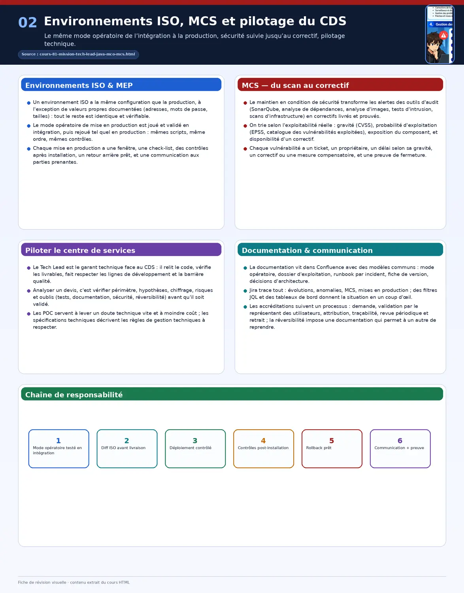
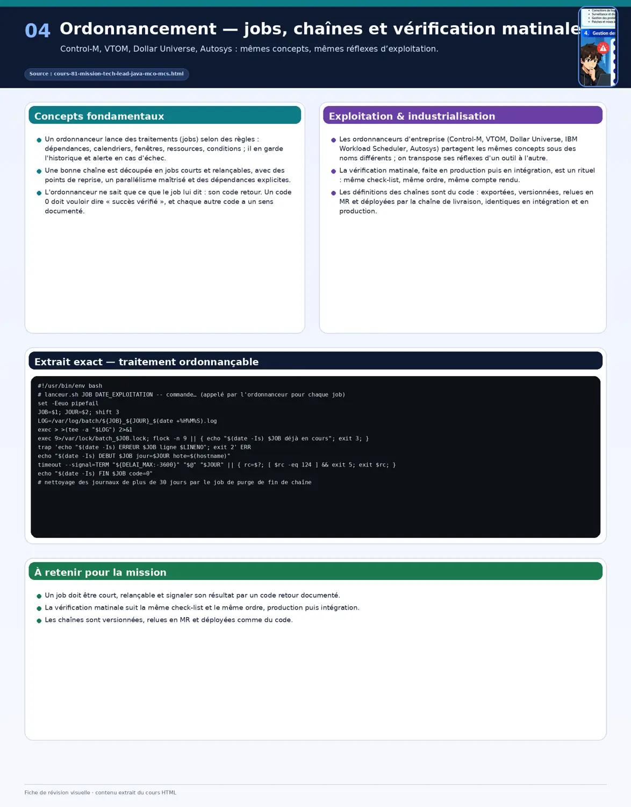
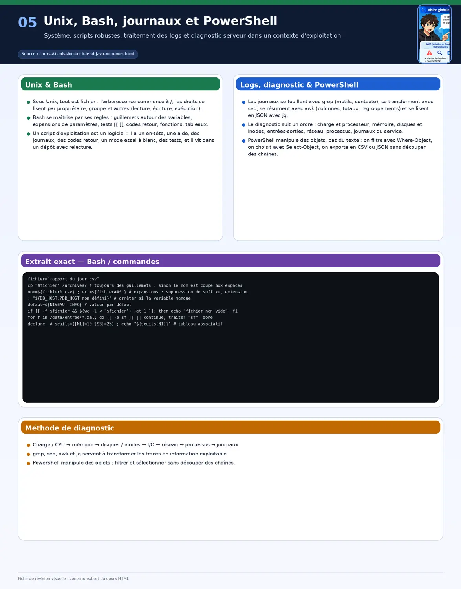
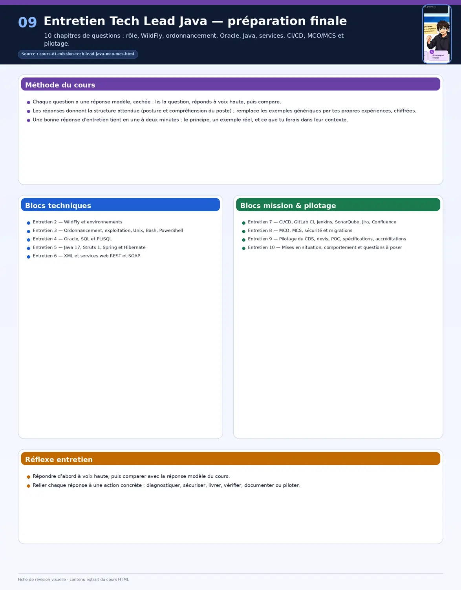

Préparer une mission de Tech Lead Java en MCO et MCS
Quarante et un chapitres en onze parties pour se préparer en profondeur à une mission de Tech Lead (niveaux expert et avancé) sur une application Java legacy dans une grande institution financière publique : périmètre et niveaux attendus, cartographie d'une application Struts, Spring, Hibernate et Oracle, WildFly de l'installation à la migration, environnements ISO et mises en production, ordonnancement et vérification matinale, Unix, Bash et PowerShell, Oracle SQL et PL/SQL, Java 17 et plus, services web SOAP et REST, CI/CD et barrière SonarQube, MCS, pilotage d'un centre de services, documentation, Jira, Confluence et accréditations, automatisation en Python, et préparation de l'entretien. Tout tourne en conteneur ; chaque chapitre a ses exercices corrigés et un travail pratique avec correction type.
≈ 110 h de travail · un cours détaillé par technologie exigée ; les parties 5 à 10 sont complétées au fil des livraisons.
Comprendre la mission : périmètre, acteurs, niveaux attendus
En 30 secondes
Le Tech Lead garantit que l'application tourne (MCO : évolutive, adaptative, corrective), qu'elle reste sûre (MCS : corriger les vulnérabilités remontées par les audits), et que chaque version passe proprement de l'intégration à la production.
Il ne code pas seul : il pilote un centre de services (CDS) qui développe, travaille avec l'équipe DevOps, l'exploitation, l'architecte, la maîtrise d'œuvre et la maîtrise d'ouvrage, et appuie le support de niveau 2.
Deux profils : expert (environnements, ordonnancement, exploitation, migrations, accréditations) et avancé (MCO/MCS, spécifications, suivi du CDS) ; les compétences exigées vont de Java 17 à l'ordonnancement.
Le Tech Lead qui fait tout lui-même lâche ce que lui seul peut faire : il garantit le fonctionnement, pilote le CDS et arbitre, et code surtout les POC et les urgences.
À la fin de ce chapitre, tu sauras
Décrire le périmètre et les livrables de la mission
Situer chaque acteur et ce qu'il attend du Tech Lead
Évaluer ses écarts avec les niveaux exigés et bâtir un plan
Les activités et leurs livrables
Activité
Actions et livrables
Rythme
Faire fonctionner intégration et production
suivi de l'ordonnancement, configuration, surveillance, module d'exploitation
à chaque changement d'infrastructure ou version
Mode opératoire testé et ISO
installation jouée en intégration puis identique en production, vérification matinale des traitements
chaque mise en production, chaque matin
Nouveaux modules
étude de solutions avec l'architecte et le CDS
chaque demande d'évolution
MCO et MCS
Confluence, Jira, communication, CI/CD du CDS, revue de code, livrables, barrière SonarQube, POC, analyse des devis
chaque évolution ou correctif
Migrations techniques
analyse et mise en place selon les standards de l'organisation, accompagnement
chaque migration de composant
Accréditations
gestion des droits des utilisateurs avec leurs représentants
On note son niveau réel pour chaque ligne (de 0 à 4), on commence par les écarts sur les compétences de niveau expert, et on termine chaque chapitre par son TP : une compétence n'est acquise que si on l'a pratiquée dans un conteneur, pas seulement lue.
Semaine 3 : Oracle (partie 5), Java 17 (partie 6), Struts, Spring et Hibernate (partie 7)
Semaine 4 : XML et services web (partie 8), CI/CD (partie 9), Python (partie 10), sécurité applicative et pilotage du CDS (partie 1), entretien (partie 11)
Exercice 1.1
Quelle différence entre MCO « évolutive, adaptative et corrective » ?
Corrigé
Corrective : réparer ce qui ne marche pas ; adaptative : suivre les changements de l'environnement (versions, infrastructure, réglementation) ; évolutive : ajouter ou modifier des fonctions. Les trois se planifient différemment, et la corrective urgente passe avant tout.
Exercice 1.2
Question d'entretien : que fait un Tech Lead en MCO que ne fait pas un développeur ?
Corrigé
Il garantit le fonctionnement de bout en bout : environnements, ordonnancement, mises en production testées et identiques, qualité et sécurité des livrables du CDS, arbitrages techniques, communication aux parties prenantes ; il code surtout pour les POC, les scripts et les corrections critiques.
Travail pratique 1 — Ma grille de préparation
Remplir la grille d'auto-évaluation des onze compétences exigées.
Classer les écarts, en commençant par les compétences de niveau expert.
Construire son planning de quatre semaines et le relier aux TP de cette page.
Correction type
Attendu : une grille chiffrée, les trois écarts prioritaires identifiés, un planning daté ; à la fin, chaque ligne remontée au niveau exigé preuve à l'appui (TP réalisé).
Chapitre 2Débutant
Le socle applicatif : cartographier une application Java legacy
En 30 secondes
L'architecture typique : pages JSP et actions Struts 1, services Spring, accès aux données par Hibernate, base Oracle, le tout packagé en WAR ou EAR et déployé sur WildFly, avec des traitements par lots ordonnancés.
La première semaine sert à cartographier : modules, flux, dépendances, configurations par environnement, traitements, points de fragilité ; on n'améliore que ce qu'on a compris.
Le résultat est un document vivant dans Confluence : schéma d'architecture, inventaire des composants et versions, liste des risques.
Un avis ferme sans connaître l'existant se paie ensuite : on cartographie une semaine, puis on s'engage.
À la fin de ce chapitre, tu sauras
Reconnaître les couches d'une application legacy
Cartographier une application inconnue en une semaine
Produire l'inventaire technique et la liste des risques
Les couches
Navigateur, puis JSP et Struts 1 : ActionServlet, Actions, ActionForms, Tilescouche web, javax.servlet
Services Spring : transactions, règles métierbeans annotés ou XML
DAO Hibernate : sessions, mappings hbm.xml ou annotationsaccès aux données
Oracle : tables, séquences, PL/SQLbase de données
Déploiement : WAR ou EAR sur WildFly (datasource JNDI, sécurité, journaux) · à côté : services SOAP et REST, traitements par lots lancés par l'ordonnanceurexploitation
flux, services exposés et appelés, traitements ordonnancés
schéma des flux et de l'ordonnancement
Jour 5
journaux, incidents récents, rapport SonarQube, vulnérabilités
liste des risques priorisés
L'inventaire technique
Chaque composant avec sa version, sa date de fin de support et son risque : Java, WildFly, Struts, Spring, Hibernate, pilote Oracle, bibliothèques. Les composants en fin de support alimentent le plan de migration (chapitres 4, 9 et 10) et le suivi MCS (chapitre 13).
Fiche visuelle : Rôle, MCO et MCS, architecture legacy
Exercice 2.1
Tu arrives et on te demande un avis sur une évolution dès le deuxième jour. Que fais-tu ?
Corrigé
Je donne un avis prudent et daté : ce que je sais, ce que je dois vérifier, et quand je reviendrai avec une réponse ferme ; puis je cartographie en priorité la partie concernée. Un avis ferme sans connaître l'existant est un risque pour tout le monde.
Exercice 2.2
Question d'entretien : comment prends-tu en main une application que tu ne connais pas ?
Corrigé
En la faisant tourner dans un environnement maîtrisé, en inventoriant composants, versions et flux, en lisant les incidents et les rapports qualité récents, puis en écrivant une page de synthèse avec les risques ; je propose les premières actions à la fin de la première semaine.
Travail pratique 2 — Cartographier le module legacy de CrisisShield
Construire et lancer le module legacy (Struts 1, Spring, Hibernate) sur WildFly avec Oracle Free en Compose.
Inventaire des composants et versions avec fin de support ; schéma des couches et des flux.
Liste des dix risques principaux, classés par gravité et probabilité.
Correction type
Attendu : l'application démarre depuis le dépôt ; l'inventaire indique pour chaque composant sa version et son statut de support ; les risques sont reliés à une action proposée.
Chapitre 3Senior
Environnements ISO et mise en production
En 30 secondes
Un environnement ISO a la même configuration que la production, à l'exception de valeurs propres documentées (adresses, mots de passe, tailles) : tout le reste est identique et vérifiable.
Le mode opératoire de mise en production est joué et validé en intégration, puis rejoué tel quel en production : mêmes scripts, même ordre, mêmes contrôles.
Chaque mise en production a une fenêtre, une check-list, des contrôles après installation, un retour arrière prêt, et une communication aux parties prenantes.
Deux environnements différents sans le savoir rendent les tests trompeurs : on compare les configurations avant chaque mise en production.
À la fin de ce chapitre, tu sauras
Garantir l'ISO entre intégration et production
Écrire un mode opératoire rejouable et vérifiable
Conduire une mise en production avec contrôles et retour arrière
Vérifier l'ISO
On exporte la configuration de chaque environnement dans le même format, on remplace les valeurs propres par des variables, puis on compare : toute différence non documentée est un écart à corriger avant la mise en production.
# export de la configuration WildFly (sous-systèmes utiles) de chaque environnement
for env in integration production; do
jboss-cli.sh --controller=wildfly-$env:9990 --connect --command="/subsystem=datasources:read-resource(recursive=true)" > ds-$env.txt
done
sed -E 's/(integration|production)//g; s/password=.*$/password=***/' ds-integration.txt > a.txt
sed -E 's/(integration|production)//g; s/password=.*$/password=***/' ds-production.txt > b.txt
diff -u a.txt b.txt && echo "ISO : aucune différence non documentée"
# versions : application, WildFly, Java, pilote Oracle relevées dans la fiche de version
Le mode opératoire
Étape
Contenu
Preuve
Avant
fiche de version, validation en intégration, sauvegarde, fenêtre et interlocuteurs confirmés
go ou pas go
Arrêt
arrêt de l'ordonnancement concerné, arrêt gracieux du serveur
traitements suspendus
Installation
scripts jboss-cli, scripts SQL numérotés, déploiement de l'artefact versionné
journal d'installation
Contrôles
démarrage, test de connexion, parcours de recette rapide, journaux sans erreur
procès-verbal de contrôles
Reprise
relance de l'ordonnancement, surveillance renforcée
traitements repris
Retour arrière
artefact précédent, scripts SQL inverses ou restauration, décision tracée
critères de déclenchement écrits
Communication
début, fin, résultat, points d'attention
mail aux parties prenantes
La communication
Objet : [Mise en production] Application — version 4.12.0 — jeudi 2 octobre, 20 h 00 à 22 h 00
Bonjour,
La version 4.12.0 sera installée en production jeudi de 20 h à 22 h (fenêtre validée).
Contenu : correction de trois anomalies (tickets APP-812, APP-815, APP-820) et mise à jour de sécurité du pilote Oracle.
Impact : application indisponible pendant la fenêtre ; traitements de nuit décalés à 22 h 30.
Validation : version installée et contrôlée en intégration le 29/09 (procès-verbal joint).
Retour arrière : prêt, version 4.11.3, décision au plus tard à 21 h 30.
Un message de fin d'intervention suivra.
Exercice 3.1
En production, la datasource a une taille de pool maximale de 20, contre 50 en intégration. Est-ce un écart ISO ?
Corrigé
Oui, sauf si c'est une valeur propre documentée et justifiée (dimensionnement). Sinon, les tests de charge en intégration ne valent rien pour la production : on aligne, ou on documente la différence et on refait le test avec la valeur de production.
Exercice 3.2
Question d'entretien : comment garantis-tu qu'une installation en production se passera comme en intégration ?
Corrigé
Mêmes artefacts versionnés, mêmes scripts jouant la configuration, même ordre, environnements comparés automatiquement avant la mise en production, contrôles écrits après installation, et retour arrière préparé avec des critères de déclenchement.
Travail pratique 3 — Mise en production simulée
Deux environnements WildFly + Oracle en Compose (intégration, production) configurés par les mêmes scripts.
Comparaison automatique des configurations ; introduire un écart et le détecter.
Jouer une mise en production complète avec check-list, contrôles, retour arrière déclenché puis mail de fin.
Correction type
Attendu : l'écart introduit est détecté avant l'installation ; le retour arrière ramène la version précédente en moins de quinze minutes ; le procès-verbal et les deux mails sont prêts à l'emploi.
Chapitre 4Senior
MCS : de l'audit au correctif déployé
En 30 secondes
Le maintien en condition de sécurité transforme les alertes des outils d'audit (SonarQube, analyse de dépendances, analyse d'images, tests d'intrusion, scans d'infrastructure) en correctifs livrés et prouvés.
On trie selon l'exploitabilité réelle : gravité (CVSS), probabilité d'exploitation (EPSS, catalogue des vulnérabilités exploitées), exposition du composant, et disponibilité d'un correctif.
Chaque vulnérabilité a un ticket, un propriétaire, un délai selon sa gravité, un correctif ou une mesure compensatoire, et une preuve de fermeture.
Trois cents alertes non triées n'en font corriger aucune : on regroupe, on priorise selon l'exploitabilité, on planifie et on prouve chaque fermeture.
À la fin de ce chapitre, tu sauras
Collecter et trier les vulnérabilités de toutes les sources
Planifier et suivre la remédiation
Traiter les cas sans correctif (dérogations, mesures compensatoires)
Les sources
Source
Ce qu'elle trouve
Réponse type
SonarQube
vulnérabilités et points sensibles du code
revue et correction par le CDS
dependency-check, Trivy
bibliothèques et images vulnérables
mise à jour de version
Test d'intrusion
failles exploitables de bout en bout
correctif applicatif ou de configuration
Scans d'infrastructure
système, middleware, TLS
correctifs système, WildFly, Java
Bulletins de sécurité
avis des éditeurs (Java, WildFly, Oracle)
veille et planification
Trier et planifier
Situation
Délai (à adapter à la politique)
Réponse
Critique, exploitée ou exposée sur Internet
72 heures
correctif ou mesure compensatoire
Critique non exposée, ou élevée exposée
15 jours
correctif planifié en urgence
Élevée non exposée, ou moyenne
prochaine version (60 jours au plus)
lot de mises à jour
Faible
avec les évolutions du composant
suivi
Pour chaque ligne
ticket Jira avec le label MCS
composant, version corrigée, propriétaire, date cible, preuve de fermeture
Sans correctif
Pour un composant en fin de support (Struts 1) ou un correctif impossible à court terme, on documente une dérogation : risque, mesures compensatoires (filtre, WAF, isolement réseau, surveillance), date de réexamen, validation par le responsable de la sécurité ; la dérogation n'est jamais permanente.
Exercice 4.1
Un scan remonte 300 vulnérabilités sur l'application. Par où commences-tu ?
Corrigé
Par le tri : je regroupe par composant (souvent quelques bibliothèques expliquent la majorité), je priorise ce qui est exploité, exposé et critique, je vérifie les faux positifs, puis je planifie des lots de mises à jour testés en intégration ; le reste suit la grille de délai.
Exercice 4.2
Question d'entretien : comment prouves-tu qu'une vulnérabilité est corrigée ?
Corrigé
Par un nouveau scan qui ne la remonte plus sur la version déployée, et quand c'est possible par un test qui reproduisait l'exploitation et échoue désormais ; la preuve est jointe au ticket avant sa fermeture.
Travail pratique 4 — Campagne MCS
Lancer dependency-check, Trivy et SonarQube sur le module legacy ; consolider dans un tableau.
Trier avec la grille, créer les tickets, corriger un lot de dépendances et redéployer en intégration.
Rédiger une dérogation pour Struts 1 avec mesures compensatoires et date de réexamen.
Correction type
Attendu : un tableau consolidé sans doublons, trié ; le lot de mises à jour ferme ses vulnérabilités preuve à l'appui ; la dérogation est complète et datée.
Chapitre 5Senior
Piloter un centre de services : revues, livrables, devis, POC
En 30 secondes
Le Tech Lead est le garant technique face au CDS : il relit le code, vérifie les livrables, fait respecter les lignes de développement et la barrière qualité.
Analyser un devis, c'est vérifier périmètre, hypothèses, chiffrage, risques et oublis (tests, documentation, sécurité, réversibilité) avant qu'il soit validé.
Les POC servent à lever un doute technique vite et à moindre coût ; les spécifications techniques décrivent les règles de gestion techniques à respecter.
Un devis non analysé laisse tout ce qui n'y est pas écrit hors du contrat : périmètre, hypothèses, oublis et critères se vérifient avant de valider.
À la fin de ce chapitre, tu sauras
Mener une revue de code et une vérification de livrable
Analyser un devis et formuler des remarques utiles
Cadrer un POC et rédiger des spécifications techniques
Revue de code et livrables
Revue de code du CDS
Conforme aux lignes de développement : couches, nommage, gestion d'erreurs, journaux
Pas de logique métier dans les Actions Struts ; transactions dans les services
Requêtes : paramètres liés (pas de concaténation), pas de N+1, index nécessaires livrés
Sécurité : entrées validées, sorties échappées, pas de secret, droits vérifiés côté serveur
Tests présents et utiles ; barrière SonarQube verte sur le nouveau code
Vérification d'un livrable
Artefact versionné et fiche de version
Scripts SQL et de configuration numérotés, avec leur retour arrière
Mode opératoire, notes de version, documentation à jour
Analyser un devis
Point
Question
Exemple de remarque
Périmètre
tout le besoin est-il couvert, rien de plus ?
« le devis ne couvre pas la reprise des données »
Hypothèses
explicites et réalistes ?
« l'hypothèse d'un environnement disponible au jour 1 est à confirmer »
Chiffrage
cohérent avec des tâches comparables (abaques, historique)
« 12 jours pour cet écran contre 5 sur l'écran similaire »
Un POC a une question précise, une durée bornée, des critères de réussite et une conclusion écrite (on garde, on jette, on approfondit). Une spécification technique décrit les règles à respecter : interfaces, formats, performances, sécurité, exploitation (journaux, codes retour, ordonnancement).

Fiche visuelle : Environnements identiques, mise en production, MCS et pilotage du centre de services
Exercice 5.1
Le CDS propose 40 jours pour une évolution que tu estimes à 20. Comment le traites-tu ?
Corrigé
Sans conflit : je demande le détail par tâche, je compare aux abaques et à l'historique, je repère les écarts (hypothèses, risques surestimés, périmètre élargi), et je formule des remarques précises ; la discussion aboutit à un chiffrage justifié ou à un périmètre revu.
Exercice 5.2
Question d'entretien : comment fais-tu respecter la qualité par un prestataire ?
Corrigé
Par des règles écrites et partagées (lignes de développement, barrière qualité, liste de revue), appliquées systématiquement, des retours précis et rapides, des indicateurs suivis dans le temps, et un dialogue régulier ; la qualité se négocie au début, pas à la livraison.
Travail pratique 5 — Une semaine de pilotage du CDS
Revue de code d'une merge request volontairement imparfaite : dix remarques classées.
Analyse d'un devis fictif : remarques écrites sur périmètre, hypothèses, chiffrage, oublis, risques.
Cadrage d'un POC d'une page et d'une spécification technique d'une page.
Correction type
Attendu : les remarques sont précises et actionnables ; l'analyse du devis relève au moins quatre oublis ou incohérences ; le POC a un critère de réussite mesurable.
Chapitre 6Confirmé
Documentation, Jira, Confluence, communication et accréditations
En 30 secondes
La documentation vit dans Confluence avec des modèles communs : mode opératoire, dossier d'exploitation, runbook par incident, fiche de version, décisions d'architecture.
Jira trace tout : évolutions, anomalies, MCS, mises en production ; des filtres JQL et des tableaux de bord donnent la situation en un coup d'œil.
Les accréditations suivent un processus : demande, validation par le représentant des utilisateurs, attribution, traçabilité, revue périodique et retrait ; la réversibilité impose une documentation qui permet à un autre de reprendre.
Des droits donnés sans trace s'accumulent : demande, validation, attribution minimale et limitée, puis revue régulière.
À la fin de ce chapitre, tu sauras
Structurer la documentation d'exploitation dans Confluence
Piloter l'activité avec Jira et JQL
Gérer les accréditations et préparer la réversibilité
project = APP AND type = Bug AND priority in (Highest, High) AND statusCategory != Done ORDER BY created DESC
project = APP AND labels = MCS AND duedate < endOfWeek() AND statusCategory != Done -- MCS en retard cette semaine
project = APP AND fixVersion = "4.12.0" AND statusCategory != Done -- reste à faire de la version
project = APP AND status changed to "Livré" during (startOfMonth(), now()) AND assignee in membersOf("cds")
Tableau de bord : anomalies ouvertes par gravité, MCS par échéance, versions en cours, délai moyen de correction
Accréditations et réversibilité
Demande par ticket : qui, quel rôle, quel environnement, pourquoi, jusqu'à quand
Validation par le représentant des utilisateurs finaux (propriétaire métier)
Attribution (groupe d'annuaire ou rôle applicatif), selon le moindre privilège
Traçabilité : ticket, date, valideur, auteur de l'attribution
Revue périodique des droits (trimestrielle), retrait au départ ou au changement de poste
Séparation des tâches : personne ne valide ses propres droits
Réversibilité : dossier d'exploitation, modes opératoires, runbooks, inventaire et accès à jour, et sessions de transfert planifiées avec le repreneur.
Exercice 6.1
Un utilisateur demande en urgence les droits d'administration en production « pour débloquer un dossier ». Que fais-tu ?
Corrigé
Je ne court-circuite pas le processus : je trace la demande, je la fais valider par le représentant des utilisateurs, et je propose le droit minimal nécessaire, limité dans le temps ; si l'urgence est réelle, une procédure d'urgence écrite existe, avec retrait et revue a posteriori.
Exercice 6.2
Question d'entretien : à quoi reconnais-tu une bonne documentation d'exploitation ?
Corrigé
À ce qu'une personne qui ne connaît pas l'application peut installer une version, traiter un incident courant et reprendre l'exploitation en la suivant ; elle est à jour, versionnée, et mise à l'épreuve lors des exercices.
Travail pratique 6 — Kit documentaire et pilotage
Rédiger les cinq modèles Confluence (en Markdown dans le dépôt pour l'exercice) remplis pour CrisisShield.
Écrire dix filtres JQL et le tableau de bord de pilotage (sur un Jira de test ou sur papier).
Formaliser le processus d'accréditation et un modèle de revue trimestrielle des droits.
Correction type
Attendu : une personne extérieure installe une version avec le mode opératoire seul ; le tableau de bord répond à « où en est-on ? » en une minute ; la revue des droits trouve au moins un droit à retirer dans le jeu de test.
WildFly est le serveur d'applications Jakarta EE open source de Red Hat ; JBoss EAP en est la version supportée commercialement, construite sur la même base.
Il est fait de modules (JBoss Modules) et de sous-systèmes (web, datasources, sécurité, journaux, messagerie), tous pilotés par un modèle de gestion unique : fichier XML, ligne de commande, console, API HTTP.
WildFly 26 est la dernière version en Jakarta EE 8 (paquets javax) ; à partir de 27, Jakarta EE 10 (paquets jakarta) : ce seuil structure toutes les migrations.
Un serveur de laboratoire recopié en production expose sa console : la gestion n'écoute que sur le réseau d'administration, avec des comptes nominatifs.
À la fin de ce chapitre, tu sauras
Expliquer l'architecture de WildFly et ses versions
Installer et lancer WildFly en conteneur avec la bonne configuration
Se repérer dans les répertoires, les ports et les fichiers de configuration
Versions et Jakarta EE
Version
Plateforme
À retenir
WildFly 26 (2022)
Jakarta EE 8, paquets javax.*
dernière version javax ; plus maintenue par le projet
WildFly 27 et plus
Jakarta EE 10, paquets jakarta.*
migration du code et des bibliothèques nécessaire
JBoss EAP 7.4
Jakarta EE 8 (javax)
support éditeur, base proche de WildFly 23 à 26
JBoss EAP 8
Jakarta EE 10 (jakarta)
support éditeur, base proche de WildFly 27 et plus
Installer et lancer
Le serveur se lance avec une configuration (-c), une adresse d'écoute publique (-b) et une adresse de gestion (-bmanagement), qu'on limite au réseau d'administration hors laboratoire. Un utilisateur de gestion se crée avec add-user.sh.
# docker-compose.yml
services:
wildfly:
image: quay.io/wildfly/wildfly:26.1.3.Final-jdk17
command: ["/opt/jboss/wildfly/bin/standalone.sh", "-c", "standalone-full.xml", "-b", "0.0.0.0", "-bmanagement", "0.0.0.0"]
ports: ["8080:8080", "9990:9990"]
docker compose up -d
docker compose exec wildfly /opt/jboss/wildfly/bin/add-user.sh -u admin-tl -p "$MGMT_PASSWORD" --silent # utilisateur de gestion
docker compose exec wildfly /opt/jboss/wildfly/bin/jboss-cli.sh --connect --command=":read-attribute(name=product-version)"
# décalage de tous les ports (plusieurs instances sur une machine) : -Djboss.socket.binding.port-offset=100
Quelle configuration choisir entre standalone.xml et standalone-full.xml ?
Corrigé
standalone.xml contient le profil web (servlets, JPA, CDI…) ; standalone-full.xml ajoute la messagerie (JMS avec Artemis) et d'autres services Jakarta EE complets. On prend la plus petite qui couvre les besoins de l'application, et les variantes -ha pour le cluster.
Exercice 7.2
Question d'entretien : WildFly ou JBoss EAP ?
Corrigé
Même base technique : WildFly évolue vite, sans support ; JBoss EAP est la version stabilisée et supportée par Red Hat, avec correctifs de sécurité sur la durée. En production critique, EAP ou une version de WildFly suivie de près ; le choix dépend du contrat de support et de la politique de l'organisation.
Travail pratique 7 — Premier WildFly
Lancer WildFly 26 en conteneur avec standalone-full.xml ; créer un utilisateur de gestion.
Relever version, ports, configuration active et sous-systèmes par la CLI.
Lancer une seconde instance avec un décalage de ports.
Correction type
Attendu : la console répond sur 9990 avec l'utilisateur créé ; la CLI renvoie la version ; les deux instances tournent sans conflit de ports.
Chapitre 8Confirmé
WildFly 2 — Le modèle de gestion et jboss-cli
En 30 secondes
Tout se configure par des adresses (/subsystem=datasources/data-source=X) et des opérations (:read-resource, :add, :write-attribute, :remove) : c'est le même modèle pour la CLI, la console et l'API HTTP.
Les scripts jboss-cli sont versionnés, idempotents (if … of … read-resource), groupés en lots (batch) et paramétrés par fichier de propriétés : le même script configure l'intégration et la production.
Certaines modifications demandent un rechargement (reload-required) ; embed-server permet de configurer hors ligne, par exemple pendant la construction d'une image.
Une modification à la main de la configuration n'est ni tracée ni rejouée : un script jboss-cli versionné, joué en intégration puis en production.
À la fin de ce chapitre, tu sauras
Lire et modifier le modèle de gestion
Écrire des scripts jboss-cli idempotents et paramétrés
Gérer rechargements, configuration hors ligne et API HTTP
Le script ne crée que ce qui manque et lit ses valeurs dans un fichier de propriétés par environnement ; les modifications sont groupées en lot pour être appliquées ensemble ou pas du tout.
embed-server démarre un serveur sans réseau pour appliquer un script à la configuration, idéal pendant la construction d'une image ; l'API HTTP de gestion accepte les mêmes opérations en JSON, pratique pour les contrôles automatisés.
Après ton script, :read-attribute(name=server-state) renvoie reload-required. Que faire ?
Corrigé
La configuration persistée a changé mais n'est pas encore active : on planifie un :reload (quelques secondes d'indisponibilité) dans la fenêtre prévue, ou on l'inclut en fin de script ; certaines modifications exigent même un redémarrage complet (restart-required).
Exercice 8.2
Question d'entretien : comment garantis-tu une configuration identique entre intégration et production ?
Corrigé
Un seul jeu de scripts jboss-cli versionnés, idempotents, paramétrés par un fichier de propriétés par environnement ; les valeurs propres sont documentées, et un export comparé automatiquement vérifie l'absence d'écart avant chaque mise en production.
Travail pratique 8 — Configuration par scripts
Écrire commun.cli (propriétés système, écouteur HTTP, niveau de journal) et deux fichiers de propriétés.
L'appliquer en intégration et en production (deux conteneurs), puis rejouer sans effet.
Appliquer le même script hors ligne dans un Dockerfile avec embed-server.
Correction type
Attendu : les deux environnements ne diffèrent que par les propriétés documentées ; la seconde exécution ne change rien ; l'image construite démarre déjà configurée.
Chapitre 9Senior
WildFly 3 — Datasources, pilote Oracle et pools de connexions
En 30 secondes
Le pilote Oracle est installé comme module, déclaré comme pilote JDBC, puis utilisé par une datasource exposée en JNDI (java:jboss/datasources/CriseDS).
Le pool se dimensionne (min, max, délais) et se protège : validation des connexions, tri des exceptions Oracle, délai d'attente, détection des fuites.
Les statistiques du pool (connexions actives, disponibles, attente maximale) sont la première chose à regarder quand l'application ralentit.
Sans validation, le pool garde des connexions mortes après une coupure : validation et tri des exceptions Oracle le réparent tout seul.
À la fin de ce chapitre, tu sauras
Installer le pilote Oracle et créer une datasource
max aligné sur la capacité de la base et le nombre de fils
blocking-timeout-wait-millis
attente maximale d'une connexion libre
échouer vite plutôt que bloquer
validate-on-match / background-validation
vérifier la connexion avant usage, ou en tâche de fond
élimine les connexions mortes après un redémarrage d'Oracle
exception-sorter
reconnaître les erreurs Oracle fatales
retire la connexion cassée du pool
idle-timeout-minutes
fermer les connexions inactives
évite les coupures par le pare-feu
track-statements, détection des fuites
signaler les connexions non fermées
à activer pour diagnostiquer
Statistiques et diagnostic
/subsystem=datasources/data-source=CriseDS/statistics=pool:read-resource(include-runtime=true)
# ActiveCount (en usage), AvailableCount (libres), MaxUsedCount (pic), MaxWaitTime (attente la plus longue), TimedOut
/subsystem=datasources/data-source=CriseDS:flush-invalid-connection-in-pool # retirer les connexions invalides
/subsystem=datasources/data-source=CriseDS:flush-all-connection-in-pool # tout renouveler (avec prudence)
# fuites : /subsystem=jca/cached-connection-manager=cached-connection-manager:write-attribute(name=debug,value=true)
Exercice 9.1
Après un redémarrage d'Oracle cette nuit, l'application renvoie des erreurs « connexion fermée » jusqu'au redémarrage de WildFly. Que manque-t-il ?
Corrigé
La validation des connexions (validate-on-match ou validation en tâche de fond) et le tri des exceptions Oracle : le pool aurait détecté et remplacé les connexions mortes. On les active, et on teste en redémarrant Oracle en intégration.
Exercice 9.2
Question d'entretien : comment dimensionnes-tu un pool ?
Corrigé
À partir du nombre de requêtes simultanées réellement utiles et de la capacité de la base (sessions, processeurs), pas au maximum possible ; un pool trop grand déplace la contention vers la base. On mesure les pics (MaxUsedCount, MaxWaitTime) sous charge et on ajuste.
Travail pratique 9 — Pool robuste
Pilote Oracle en module et datasource par script idempotent, statistiques activées.
Redémarrer Oracle pendant que l'application tourne ; vérifier le retour automatique sans erreur durable.
Provoquer un épuisement du pool et le diagnostiquer par les statistiques.
Correction type
Attendu : après le redémarrage d'Oracle, les erreurs cessent d'elles-mêmes en quelques secondes ; l'épuisement est visible (ActiveCount = max, MaxWaitTime élevé) et expliqué.
Chapitre 10Senior
WildFly 4 — Déployer : WAR, EAR, classloading, JNDI, messagerie
En 30 secondes
Une application se déploie en WAR (web) ou en EAR (plusieurs modules) ; en production, par la CLI ou la chaîne de livraison, jamais par copie manuelle.
WildFly isole les applications par modules : une bibliothèque embarquée peut entrer en conflit avec celle du serveur ; jboss-deployment-structure.xml règle exclusions et dépendances.
Les ressources partagées (datasources, files JMS Artemis, propriétés) sont nommées en JNDI et injectées ; une application Struts et Spring embarque ses bibliothèques dans WEB-INF/lib.
Deux versions d'une même bibliothèque se battent au chargement : on exclut explicitement l'une des deux et l'on garde les environnements identiques.
À la fin de ce chapitre, tu sauras
Déployer, remplacer et retirer une application
Résoudre les conflits de classes avec jboss-deployment-structure.xml
Configurer JNDI et files de messages pour une application
Déployer
jboss-cli.sh --connect --command="deploy /livraisons/crise-4.12.0.war --name=crise.war --runtime-name=crise.war --force"
jboss-cli.sh --connect --command="deployment-info --name=crise.war"
jboss-cli.sh --connect --command="undeploy crise.war --keep-content" # retirer sans supprimer le contenu
# scanner de déploiement (développement) : copier crise.war dans standalone/deployments/ ; fichiers témoins .deployed, .failed
# le nom d'exécution fixe le contexte web (/crise) : garder le même nom d'une version à l'autre
Conflits de classes
Une erreur NoSuchMethodError ou ClassCastException au démarrage signale souvent deux versions d'une même bibliothèque (celle de l'application et celle du serveur). On exclut le module du serveur, ou on retire la copie embarquée, et on déclare explicitement les modules nécessaires.
<!-- WEB-INF/jboss-deployment-structure.xml -->
<jboss-deployment-structure>
<deployment>
<exclude-subsystems>
<subsystem name="jpa"/> <!-- l'application embarque sa propre version d'Hibernate -->
</exclude-subsystems>
<exclusions>
<module name="org.apache.log4j"/> <!-- l'application fournit sa configuration de journaux -->
</exclusions>
<dependencies>
<module name="com.oracle"/> <!-- pilote Oracle fourni par le serveur -->
</dependencies>
</deployment>
</jboss-deployment-structure>
JNDI et messagerie
La datasource s'obtient par son nom JNDI ; avec standalone-full.xml, Artemis fournit files et sujets JMS, créés par script et utilisés par l'application.
jms-queue add --queue-address=NotificationsQueue --entries=java:/jms/queue/Notifications
/subsystem=messaging-activemq/server=default/jms-queue=NotificationsQueue:read-resource(include-runtime=true) # messages en attente
// Spring : <jee:jndi-lookup id="dataSource" jndi-name="java:jboss/datasources/CriseDS"/>
// Java EE / Jakarta EE : @Resource(lookup = "java:jboss/datasources/CriseDS") DataSource ds;
Exercice 10.1
L'application démarre en intégration mais échoue en production avec NoSuchMethodError dans Hibernate. Cause probable ?
Corrigé
Un conflit de versions : l'application embarque une version d'Hibernate différente de celle fournie par le serveur, et l'ordre de chargement diffère (ou la configuration n'est pas ISO). On exclut le sous-système JPA du serveur dans jboss-deployment-structure.xml, ou on s'aligne sur la version fournie, et on vérifie l'ISO des configurations.
Exercice 10.2
Question d'entretien : comment déploies-tu en production sur WildFly ?
Corrigé
Par un script de la chaîne de livraison qui déploie un artefact versionné par la CLI (deploy --force avec un nom d'exécution stable), précédé des scripts de configuration et suivi de contrôles automatiques ; jamais par copie dans le répertoire deployments.
Travail pratique 10 — Déploiement maîtrisé
Déployer l'application CrisisShield legacy par la CLI avec un nom d'exécution stable ; remplacer par la version suivante.
Provoquer un conflit de bibliothèque et le résoudre avec jboss-deployment-structure.xml.
Créer une file JMS par script, y envoyer et consommer des messages.
Correction type
Attendu : le remplacement de version se fait sans changer l'URL ; le conflit est expliqué et résolu ; la file affiche le nombre de messages en attente dans la CLI.
Chapitre 11Senior
WildFly 5 — Exploiter et diagnostiquer
En 30 secondes
Exploiter, c'est démarrer et arrêter proprement (service systemd, arrêt gracieux, suspension), régler les journaux et surveiller pools, fils d'exécution, mémoire et temps de réponse.
Le diagnostic s'appuie sur des preuves : statistiques, vidages des fils d'exécution (plusieurs, espacés), vidage mémoire, journaux du ramasse-miettes, journaux d'accès.
Chaque symptôme courant a sa démarche : pool épuisé, fils bloqués, fuite mémoire, CPU saturé, démarrage en échec.
Un serveur démarré n'est pas un service qui répond : statistiques du pool, vidages des fils d'exécution et sessions Oracle montrent où il bloque.
À la fin de ce chapitre, tu sauras
Installer WildFly comme service et l'arrêter proprement
Configurer journaux et supervision
Diagnostiquer les incidents courants avec des preuves
Service et arrêt propre
# /etc/systemd/system/wildfly.service (hors conteneur)
[Unit]
Description=WildFly
After=network.target
[Service]
User=wildfly
Environment=JAVA_OPTS="-Xms2g -Xmx2g -XX:+UseG1GC -XX:+HeapDumpOnOutOfMemoryError -XX:HeapDumpPath=/var/dumps"
ExecStart=/opt/wildfly/bin/standalone.sh -c standalone-full.xml -b 10.0.1.20 -bmanagement 10.9.0.20
ExecStop=/opt/wildfly/bin/jboss-cli.sh --connect --controller=10.9.0.20:9990 --command=":shutdown(suspend-timeout=60)"
TimeoutStopSec=120
[Install]
WantedBy=multi-user.target
# suspendre (terminer les requêtes en cours, refuser les nouvelles) avant une opération : :suspend(suspend-timeout=60), puis :resume
Journaux et supervision
/subsystem=logging/size-rotating-file-handler=APP:add(file={path=crise.log,relative-to=jboss.server.log.dir},rotate-size=50m,max-backup-index=20,autoflush=true)
/subsystem=logging/logger=fr.crise:add(level=INFO,handlers=[APP])
/subsystem=logging/json-formatter=JSON:add(pretty-print=false) # journaux structurés pour la supervision
/subsystem=undertow/server=default-server/host=default-host/setting=access-log:add(pattern="%h %t \"%r\" %s %b %D") # %D : durée
# métriques : point de terminaison sur le port de gestion (/metrics), collecté par Prometheus ; santé : /health (selon la version)
Diagnostiquer
Symptôme
Cause fréquente
Preuves à collecter
Pages qui tournent sans fin
pool épuisé, requêtes longues, verrous en base
statistiques du pool, trois vidages des fils à 10 s d'intervalle, sessions Oracle
Lenteur progressive puis OutOfMemoryError
fuite mémoire, sessions HTTP trop grosses, cache non borné
datasource injoignable, déploiement invalide, port occupé
server.log au démarrage, deployment-info, ss -tlnp
Erreurs après mise en production
écart de configuration, bibliothèque manquante
comparaison des configurations, fiche de version
Exercice 11.1
Tu dois prendre des vidages des fils d'exécution pendant un incident : combien et pourquoi ?
Corrigé
Trois ou quatre, espacés de dix secondes environ : un seul montre une photo ; plusieurs montrent si des fils restent bloqués au même endroit (attente d'une connexion, d'un verrou, d'un appel externe) ou si le système avance.
Exercice 11.2
Question d'entretien : comment arrêtes-tu WildFly sans perdre de requêtes ?
Corrigé
Par une suspension ou un arrêt gracieux (:shutdown avec suspend-timeout) : le serveur termine les requêtes en cours et refuse les nouvelles, derrière un répartiteur qui retire l'instance du service ; jamais un kill -9 sauf blocage avéré.
Travail pratique 11 — Exploitation de WildFly
Service systemd (ou équivalent en conteneur) avec arrêt gracieux ; journaux par taille et au format JSON ; journal d'accès avec durées.
Provoquer une fuite mémoire et un blocage ; collecter vidage mémoire, vidages des fils et journaux du GC.
Rédiger les runbooks « pool épuisé » et « OutOfMemoryError ».
Correction type
Attendu : l'arrêt ne coupe aucune requête en cours ; la fuite est trouvée dans le vidage mémoire ; chaque runbook tient sur une page et s'applique sans connaître l'application.
Chapitre 12Senior
WildFly 6 — Sécurité : Elytron, TLS, gestion et durcissement
En 30 secondes
Depuis WildFly 25, toute la sécurité passe par Elytron : domaines de sécurité, royaumes (fichiers, LDAP, base de données), fabriques d'authentification HTTP, contextes TLS.
L'interface de gestion est la cible la plus sensible : utilisateurs nominatifs, réseau d'administration, TLS, audit des opérations.
Le durcissement se fait par une liste vérifiée : contenus d'exemple retirés, en-têtes de sécurité, journaux d'accès, secrets dans un magasin d'identifiants, veille des vulnérabilités.
Un mot de passe en clair dans la configuration voyage avec chaque copie : le magasin d'identifiants Elytron le garde chiffré.
À la fin de ce chapitre, tu sauras
Configurer l'authentification applicative avec Elytron et LDAP
Activer TLS sur l'application et la gestion
Appliquer et vérifier une liste de durcissement
Elytron et LDAP
/subsystem=elytron/dir-context=annuaire:add(url="ldaps://ldap.interne:636",principal="cn=svc-crise,ou=services,dc=interne",credential-reference={store=cs,alias=ldap-svc})
/subsystem=elytron/ldap-realm=annuaire-realm:add(dir-context=annuaire,identity-mapping={rdn-identifier=uid,search-base-dn="ou=personnes,dc=interne",attribute-mapping=[{filter-base-dn="ou=groupes,dc=interne",filter="(member={1})",from=cn,to=Roles}]})
/subsystem=elytron/security-domain=crise-sd:add(realms=[{realm=annuaire-realm}],default-realm=annuaire-realm,permission-mapper=default-permission-mapper)
/subsystem=elytron/http-authentication-factory=crise-http:add(security-domain=crise-sd,http-server-mechanism-factory=global,mechanism-configurations=[{mechanism-name=FORM}])
/subsystem=undertow/application-security-domain=crise:add(http-authentication-factory=crise-http)
# l'application déclare le domaine « crise » (jboss-web.xml) et ses rôles dans web.xml
Interface de gestion liée au réseau d'administration, en TLS, utilisateurs nominatifs, audit des opérations activé
Contenu d'accueil (welcome-content) et applications d'exemple retirés
En-têtes de sécurité (HSTS, X-Content-Type-Options, X-Frame-Options) ajoutés par filtres Undertow
Journal d'accès activé, conservé et exploité
Secrets dans un magasin d'identifiants Elytron, aucun mot de passe en clair dans les fichiers
Version de Java et de WildFly suivie, bulletins de sécurité lus, correctifs planifiés
Comptes système dédiés sans droits d'administration de la machine
Exercice 12.1
La console de gestion est accessible depuis le réseau bureautique avec un compte partagé. Priorités ?
Corrigé
Lier l'interface de gestion au réseau d'administration (et TLS), remplacer le compte partagé par des utilisateurs nominatifs, activer l'audit des opérations et relire l'historique, puis appliquer le reste de la liste de durcissement.
Exercice 12.2
Question d'entretien : qu'apporte Elytron ?
Corrigé
Un modèle de sécurité unique pour l'application, la gestion et TLS : domaines, royaumes interchangeables (fichiers, LDAP, JDBC, jetons), magasins d'identifiants pour les secrets ; il remplace l'ancien sous-système de sécurité, supprimé depuis WildFly 25.
Travail pratique 12 — Sécuriser WildFly
Authentification de l'application par un annuaire OpenLDAP en conteneur via Elytron.
TLS sur l'écouteur HTTPS et sur l'interface de gestion ; mots de passe dans le magasin d'identifiants.
Dérouler la liste de durcissement et produire la preuve de chaque point.
Correction type
Attendu : la connexion à l'application passe par l'annuaire et les rôles sont appliqués ; aucune connexion en clair sur la gestion ; chaque point de la liste est prouvé par une commande ou une capture.
Chapitre 13Expert
WildFly 7 — Haute disponibilité, mode domaine et migration
En 30 secondes
La haute disponibilité passe par plusieurs instances derrière un répartiteur, avec sessions répliquées (Infinispan) dans les configurations -ha, et des déploiements successifs sans interruption.
Le mode domaine centralise profils, groupes de serveurs et déploiements pour un parc de machines ; beaucoup d'équipes préfèrent le mode autonome industrialisé par scripts.
Migrer de WildFly 26 à 27 et plus impose le passage aux paquets jakarta : c'est un projet (inventaire, transformation, tests, retour arrière), pas une mise à jour.
Passer à Jakarta EE 10 casse tout ce qui reste en javax, comme Struts 1 : inventaire, POC et tests avant toute bascule.
À la fin de ce chapitre, tu sauras
Mettre en place deux instances avec sessions répliquées
Comprendre et utiliser le mode domaine
Planifier une montée de version majeure de WildFly
Haute disponibilité
# deux instances en standalone-ha.xml derrière un répartiteur (Apache mod_cluster, HAProxy ou le répartiteur de la plateforme)
standalone.sh -c standalone-ha.xml -Djboss.node.name=noeud1 -b 10.0.1.21 -bprivate 10.0.2.21
standalone.sh -c standalone-ha.xml -Djboss.node.name=noeud2 -b 10.0.1.22 -bprivate 10.0.2.22
# application distribuable : <distributable/> dans web.xml → sessions HTTP répliquées par Infinispan
# mise en production sans interruption : retirer un nœud du répartiteur, suspendre, déployer, contrôler, remettre ; puis l'autre
Le mode domaine
domain.sh --host-config=host-master.xml # contrôleur de domaine
/server-group=crise-prod:add(profile=full-ha, socket-binding-group=full-ha-sockets)
/host=machine1/server-config=crise1:add(group=crise-prod, socket-binding-port-offset=0)
deploy crise.war --server-groups=crise-prod # déploiement sur tout le groupe
/server-group=crise-prod:restart-servers # redémarrage du groupe
Migrer vers WildFly 27 et plus
Inventaire : dépendances javax.* (jdeps), bibliothèques sans version jakarta (Struts 1 en tête), configurations spécifiques
Choix : rester sur une base javax supportée (JBoss EAP 7.4), transformer les binaires (Eclipse Transformer), ou migrer le code (OpenRewrite) et remplacer les bibliothèques
Configuration : scripts jboss-cli rejoués sur la nouvelle version, écarts corrigés (sous-systèmes renommés, options retirées)
Tests : non-régression, charge et sécurité en intégration
Bascule : fenêtre dédiée, ancienne version prête au retour arrière, surveillance renforcée
Nettoyage : documentation, runbooks et dossier d'exploitation mis à jour
Exercice 13.1
On te demande de « passer sur WildFly 31 le mois prochain » alors que l'application utilise Struts 1. Que réponds-tu ?
Corrigé
Que Struts 1 dépend de javax.servlet et ne tourne pas tel quel sur Jakarta EE 10 : je propose trois options chiffrées (rester sur une base javax supportée le temps de migrer la couche web, transformer les binaires avec des tests poussés, ou migrer la couche web), avec un calendrier réaliste et un POC pour valider l'option retenue.
Exercice 13.2
Question d'entretien : mode domaine ou autonome industrialisé ?
Corrigé
Le domaine apporte une gestion centrale d'un parc homogène ; l'autonome, piloté par scripts versionnés et une chaîne de livraison, s'intègre mieux aux conteneurs et à l'automatisation. Je choisis selon le parc, les compétences de l'exploitation et les standards de l'organisation.
Travail pratique 13 — Haute disponibilité et plan de migration
Deux instances standalone-ha derrière HAProxy en Compose, sessions répliquées ; arrêter un nœud sans perdre la session.
Déploiement successif nœud par nœud sans interruption.
Dossier de migration 26 → 31 : inventaire, trois options, POC, calendrier, retour arrière.
Correction type
Attendu : la session utilisateur survit à l'arrêt d'un nœud ; le déploiement successif ne provoque aucune erreur côté client ; le dossier de migration est présentable à un comité.
Partie 3
Ordonnancement — de zéro à expert
Niveau exigé : expert. Six chapitres : concepts et dates d'exploitation, conception de chaînes robustes, traitements ordonnançables, outils du marché et équivalences, exploitation quotidienne et incidents, industrialisation et migration d'ordonnanceur. Pour aller plus loin : Talend (plans d’exécution), Data Platform (Airflow), Monitoring (Prometheus, ELK).

Fiche visuelle : Ordonnancement : jobs, chaînages et exploitation
Un ordonnanceur lance des traitements (jobs) selon des règles : dépendances, calendriers, fenêtres, ressources, conditions ; il en garde l'historique et alerte en cas d'échec.
Le plan du jour est calculé à partir des définitions et des calendriers ; chaque exécution a un statut (en attente, en cours, terminé, en erreur, forcé, annulé).
La date d'exploitation (date de traitement) n'est pas la date système : une chaîne de nuit qui passe minuit traite toujours le jour prévu.
Une chaîne de nuit qui passe minuit change de date si les scripts lisent l'horloge : la date d'exploitation est un paramètre, fourni par l'ordonnanceur.
À la fin de ce chapitre, tu sauras
Maîtriser le vocabulaire commun des ordonnanceurs
Lire un plan et les statuts des jobs
Distinguer date d'exploitation et date système
Le vocabulaire commun
Terme
Signification
Exemple
Job (tâche, uproc)
une commande ou un script, avec son code retour
extraction_incidents.sh
Chaîne (application, session, dossier, flux)
jobs ordonnés et dépendants
référentiels puis calculs puis éditions
Plan (plan du jour)
exécutions prévues pour une date d'exploitation
plan du 29/09
Dépendance
un job attend la fin réussie d'un autre
calcul après extraction
Condition, événement
attente d'un fichier, d'un signal, d'une autre chaîne
fichier du partenaire arrivé
Calendrier
jours d'exécution (ouvrés, fériés, fin de mois)
jours ouvrés seulement
Fenêtre, heure limite
plage autorisée, heure de fin attendue
de 21 h à 5 h, fin avant 6 h
Ressource
limite de parallélisme ou exclusivité
un seul job sur la base à la fois
Forçage, mise en attente, annulation
actions manuelles de l'exploitation
à tracer et justifier
Les statuts et le plan
Chaque matin on lit le plan de la nuit par statut : les jobs terminés en succès, ceux en erreur (avec leur code retour), ceux restés en attente (condition non remplie, dépendance en erreur) et ceux en retard par rapport à leur heure limite.
Date d'exploitation
Le script reçoit la date à traiter en paramètre au lieu de calculer « aujourd'hui » : une relance le lendemain retraite le bon jour, et une chaîne qui passe minuit ne change pas de date en cours de route.
# mauvais : la date change si le job passe minuit ou s'il est relancé le lendemain
JOUR=$(date +%Y%m%d)
# bon : la date d'exploitation est fournie par l'ordonnanceur (variable ou paramètre du job)
JOUR=${1:?date d'exploitation attendue (AAAAMMJJ)}
[[ $JOUR =~ ^[0-9]{8}$ ]] || { echo "date invalide : $JOUR"; exit 2; }
Exercice 14.1
Une chaîne de nuit démarrée à 23 h 30 produit un fichier daté du lendemain pour la moitié des jobs. Pourquoi ?
Corrigé
Les scripts calculent la date système au lieu d'utiliser la date d'exploitation : ceux qui démarrent après minuit prennent la date suivante. On passe la date d'exploitation en paramètre à chaque job, fournie par l'ordonnanceur.
Exercice 14.2
Question d'entretien : quelle différence entre une dépendance et une condition ?
Corrigé
Une dépendance relie deux jobs (l'un attend la fin réussie de l'autre) ; une condition attend un événement extérieur ou une autre chaîne (fichier arrivé, signal, fin d'une chaîne d'un autre domaine). Les deux bloquent le démarrage, mais se diagnostiquent différemment.
Travail pratique 14 — Lire un plan
Représenter la chaîne de nuit de CrisisShield (dix jobs) : dépendances, conditions, calendrier, heures limites.
Adapter trois scripts pour recevoir la date d'exploitation en paramètre et la valider.
Simuler une relance le lendemain et vérifier que le bon jour est traité.
Correction type
Attendu : un schéma clair de la chaîne ; les scripts refusent une date absente ou invalide ; la relance du lendemain retraite exactement la date d'origine.
Chapitre 15Confirmé
Ordonnancement 2 — Concevoir une chaîne robuste
En 30 secondes
Une bonne chaîne est découpée en jobs courts et relançables, avec des points de reprise, un parallélisme maîtrisé et des dépendances explicites.
Les calendriers et fenêtres traduisent les contraintes métier : jours ouvrés, fériés, fin de mois, fin d'année, heures limites des partenaires.
Les dépendances entre chaînes de domaines différents se font par conditions ou fichiers témoins documentés, jamais par des horaires supposés.
Une chaîne sans point de reprise se relance en entier : des jobs courts et idempotents permettent de repartir de l'étape en échec.
À la fin de ce chapitre, tu sauras
Découper une chaîne en jobs relançables
Exprimer calendriers, fenêtres et heures limites
Relier des chaînes entre elles sans fragilité
Découper
Principe
Mise en œuvre
Bénéfice
Un job fait une chose
extraire, contrôler, transformer, charger, éditer
relance ciblée
Points de reprise
état persisté entre les étapes
reprendre à l'étape 9, pas tout refaire
Contrôles entre étapes
volumes, présence, cohérence
arrêter tôt plutôt que propager
Parallélisme
jobs indépendants en parallèle, bornés par des ressources
gagner du temps sans saturer la base
Nettoyage
job final de purge des fichiers temporaires
pas d'accumulation
Calendriers et fenêtres
Chaque chaîne a son calendrier (jours ouvrés du pays, fermetures, fin de mois), sa fenêtre et ses heures limites, avec la conduite à tenir en cas de dépassement. Les cas particuliers (fin d'année, changement d'heure, jours fériés glissants) sont listés et testés à l'avance.
Relier des chaînes
Chaîne « référentiel » (autre équipe) ──fin OK──▶ fichier témoin /echanges/referentiel_AAAAMMJJ.ok
Chaîne « nuit_crise » : job 1 attend la condition (fichier témoin du jour) jusqu'à 01 h 30
si absent à 01 h 30 : alerte à l'astreinte et à l'équipe « référentiel », plan de repli documenté
Règle : pas de dépendance cachée par l'horaire (« normalement ils ont fini à 1 h »)
Exercice 15.1
La chaîne de nuit échoue à l'étape 9 sur 10 ; la relancer demande six heures car tout repart du début. Que changer ?
Corrigé
Découper en jobs relançables avec des points de reprise (état intermédiaire persisté, écritures idempotentes) : la relance repart de l'étape 9. On ajoute aussi des contrôles entre étapes pour échouer plus tôt.
Exercice 15.2
Question d'entretien : comment gères-tu une dépendance vers une chaîne d'une autre équipe ?
Corrigé
Par une condition explicite (fichier témoin ou événement de fin), avec une heure limite, une alerte partagée et un plan de repli documenté ; jamais par un horaire supposé, qui casse le jour où l'autre chaîne prend du retard.
Travail pratique 15 — Concevoir la chaîne de nuit
Redécouper une chaîne monolithique en jobs relançables avec points de reprise.
Définir calendrier, fenêtre, heures limites et conditions inter-chaînes.
Lister et tester les cas particuliers : fin de mois, férié, changement d'heure.
Correction type
Attendu : une relance à l'étape 9 ne rejoue que la fin ; chaque cas particulier a un comportement vérifié ; les dépendances inter-chaînes sont toutes explicites.
Chapitre 16Confirmé
Ordonnancement 3 — Écrire des traitements ordonnançables
En 30 secondes
L'ordonnanceur ne sait que ce que le job lui dit : son code retour. Un code 0 doit vouloir dire « succès vérifié », et chaque autre code a un sens documenté.
Un lanceur commun impose les mêmes conventions à tous les jobs : journal horodaté, verrou contre les doubles lancements, délai maximal, variables d'environnement, nettoyage.
Un traitement ordonnancé contrôle ses entrées et ses sorties (volumes, présence, cohérence) et se relance sans doublon.
Un traitement qui renvoie 0 sans rien produire trompe l'ordonnanceur : il contrôle ses volumes et échoue clairement.
À la fin de ce chapitre, tu sauras
Définir et appliquer une convention de codes retour
Écrire un lanceur commun pour tous les jobs
Contrôler volumes et cohérence, et garantir la relance sans doublon
Les codes retour
Code
Sens
Conduite à tenir
0
succès vérifié (contrôles passés)
suite de la chaîne
1
anomalie métier (données incohérentes)
analyse fonctionnelle, pas de relance aveugle
2
erreur technique (base, réseau, disque)
relance après correction
3
déjà en cours (verrou)
vérifier l'autre exécution
4
entrée absente ou vide
vérifier l'amont
5
délai maximal dépassé
analyser la lenteur
Un lanceur commun
#!/usr/bin/env bash
# lanceur.sh JOB DATE_EXPLOITATION -- commande… (appelé par l'ordonnanceur pour chaque job)
set -Eeuo pipefail
JOB=$1; JOUR=$2; shift 3
LOG=/var/log/batch/${JOB}_${JOUR}_$(date +%H%M%S).log
exec > >(tee -a "$LOG") 2>&1
exec 9>/var/lock/batch_$JOB.lock; flock -n 9 || { echo "$(date -Is) $JOB déjà en cours"; exit 3; }
trap 'echo "$(date -Is) ERREUR $JOB ligne $LINENO"; exit 2' ERR
echo "$(date -Is) DEBUT $JOB jour=$JOUR hote=$(hostname)"
timeout --signal=TERM "${DELAI_MAX:-3600}" "$@" "$JOUR" || { rc=$?; [ $rc -eq 124 ] && exit 5; exit $rc; }
echo "$(date -Is) FIN $JOB code=0"
# nettoyage des journaux de plus de 30 jours par le job de purge de fin de chaîne
Contrôler et relancer sans doublon
n=$(wc -l < "/data/sortie/incidents_$JOUR.csv")
[ "$n" -gt 1 ] || { echo "fichier vide"; exit 4; }
hier=$(cat "/data/suivi/volume_incidents.last" 2>/dev/null || echo "$n")
(( n * 2 < hier )) && { echo "volume divisé par plus de deux ($hier → $n)"; exit 1; }
echo "$n" > /data/suivi/volume_incidents.last
# chargement idempotent : table temporaire puis MERGE (ou suppression du jour puis insertion), jamais un simple ajout rejoué
Exercice 16.1
Un job renvoie toujours 0 car la dernière commande du script est un echo. Quelle conséquence, et quelle correction ?
Corrigé
L'ordonnanceur croit au succès même quand une étape a échoué, et la suite de la chaîne traite des données fausses. On active le mode strict (set -Eeuo pipefail), on vérifie chaque étape, on sort explicitement avec le bon code, et un test vérifie le code en cas d'échec.
Exercice 16.2
Question d'entretien : que doit faire un script avant de dire « succès » ?
Corrigé
Vérifier son résultat : fichier produit et non vide, volume cohérent avec l'historique, lignes rejetées sous un seuil, table chargée au bon compte ; le code 0 signifie « contrôlé », pas seulement « arrivé au bout ».
Travail pratique 16 — Normaliser les jobs de la chaîne
Écrire le lanceur commun (journal, verrou, délai, codes) et y faire passer tous les jobs.
Ajouter à chaque job ses contrôles de volume et de cohérence.
Rendre les chargements idempotents ; relancer deux fois le même jour.
Correction type
Attendu : chaque job produit un journal nommé et horodaté ; un double lancement renvoie 3 ; la double relance ne crée aucun doublon ; un fichier vide renvoie 4.
Chapitre 17Senior
Ordonnancement 4 — Les outils du marché et leurs équivalences
En 30 secondes
Les ordonnanceurs d'entreprise (Control-M, VTOM, Dollar Universe, IBM Workload Scheduler, Autosys) partagent les mêmes concepts sous des noms différents ; on transpose ses réflexes d'un outil à l'autre.
Chaque outil offre une console et une ligne de commande pour lister, relancer, forcer, mettre en attente ; on apprend en priorité les commandes que l'exploitation du site autorise.
Les outils libres (cron, systemd timers, Rundeck, Airflow) servent à s'entraîner et couvrent les besoins plus simples.
Forcer un job en succès fait croire à la suite que les données sont prêtes : on analyse, on corrige, et le forçage reste exceptionnel et tracé.
À la fin de ce chapitre, tu sauras
Transposer le vocabulaire d'un ordonnanceur à l'autre
Utiliser les actions courantes en console et en ligne de commande
S'entraîner sur un outil libre en conteneur
Équivalences
Outil
Objets
Enchaînement
Accès
Control-M (BMC)
job, dossier (folder)
conditions entrantes et sortantes, calendriers
console Control-M/EM, API d'automatisation
VTOM (Absyss)
job, application, environnement
liens, ressources, dates d'exploitation
console, commandes vt…
Dollar Universe (Broadcom)
uproc, session, tâche
conditions, ressources, calendriers
console Univiewer, commandes uxl…
IBM Workload Scheduler
job, job stream
dépendances, ressources, calendriers
conman, console Web
Autosys (Broadcom)
job, box
conditions (success, failure), calendriers
JIL, autorep, sendevent
Rundeck / Airflow (libres)
job, workflow ou DAG
dépendances, planification
interface Web, API, CLI
Actions courantes (exemple Autosys)
La syntaxe diffère selon l'outil et la version ; les actions, elles, sont toujours les mêmes : consulter, relancer, forcer, mettre en attente, lire le journal.
autorep -J 'nuit_crise%' -q # définitions des jobs de la chaîne (JIL)
autorep -J 'nuit_crise%' # statuts : SU (succès), FA (échec), RU (en cours), OI/OH (en attente)
sendevent -E FORCE_STARTJOB -J nuit_crise_calcul # relancer un job (après analyse)
sendevent -E JOB_ON_ICE -J nuit_crise_editions # mettre en attente sans bloquer la suite
sendevent -E CHANGE_STATUS -s SUCCESS -J nuit_crise_calcul # forcer en succès : exceptionnel, tracé, justifié
# Control-M, VTOM, Dollar Universe : mêmes actions, avec leurs propres commandes et droits
S'entraîner avec Rundeck
docker run -d --name rundeck -p 4440:4440 rundeck/rundeck:5.7.0
# projet « crise », jobs : extraction → contrôle → calcul → éditions (workflow avec étapes et gestion d'erreur)
# notifications sur échec et sur dépassement de durée ; historique et journaux par exécution
# API : curl -H "X-Rundeck-Auth-Token: $TOKEN" http://localhost:4440/api/41/project/crise/executions?statusFilter=failed
Exercice 17.1
Tu arrives sur un site en Dollar Universe alors que tu connais Control-M. Comment te mets-tu à niveau vite ?
Corrigé
En transposant les concepts (uproc et session contre job et dossier, conditions, calendriers), en demandant la documentation d'exploitation du site et les droits prévus, et en observant la vérification matinale avec l'exploitant ; en une semaine, on sait lire le plan, analyser un échec et proposer une relance.
Exercice 17.2
Question d'entretien : que penses-tu du forçage en succès d'un job en erreur ?
Corrigé
C'est exceptionnel : on ne force que si l'on sait que le résultat attendu existe par ailleurs ou n'est pas nécessaire à la suite, avec une trace (ticket), une justification et l'accord du responsable ; sinon, on corrige et on relance.
Travail pratique 17 — Une chaîne dans Rundeck
Rundeck en conteneur ; chaîne de quatre jobs utilisant le lanceur commun.
Notifications d'échec et de dépassement de durée ; consultation par l'API.
Tableau d'équivalence des commandes entre Rundeck et l'ordonnanceur que tu vises.
Correction type
Attendu : la chaîne s'exécute et s'arrête proprement sur erreur ; l'API liste les exécutions en échec ; le tableau d'équivalence tient sur une page.
Chapitre 18Senior
Ordonnancement 5 — Exploiter au quotidien : vérification matinale et incidents
En 30 secondes
La vérification matinale, faite en production puis en intégration, est un rituel : même check-list, même ordre, même compte rendu.
Face à un job en erreur : qualifier, décider (relancer, forcer, mettre en attente, escalader), exécuter, tracer, communiquer.
Les pièges connus se préparent : fins de mois et d'année, changements d'heure, jours fériés, retards des partenaires.
Les nuits de changement d'heure, 2 h 30 n'existe pas ou existe deux fois : on évite la plage, ou on planifie en UTC, et on teste.
À la fin de ce chapitre, tu sauras
Mener la vérification matinale et rédiger son compte rendu
Traiter un incident d'ordonnancement de bout en bout
Anticiper les cas particuliers du calendrier
La vérification matinale
Check-list de 8 h 00 : production, puis intégration
Plan de la nuit : tous les jobs terminés, aucun en erreur, en attente ou en retard ?
Jobs en erreur : code retour, journal, cause probable, relance possible sans risque ?
Heures limites respectées, fichiers livrés aux partenaires ?
Volumes cohérents avec la veille ?
Serveurs d'applications et base : services démarrés, pools sains, espace disque, sauvegarde de la nuit réussie
Actions : relances faites, tickets ouverts, message aux parties prenantes si impact
Traiter un incident
Qualifier : quel job, quel code retour, depuis quand, quel impact en aval et pour les utilisateurs
Diagnostiquer : journal du job, journaux applicatifs, état de la base et des dépendances
Décider : relancer (si idempotent et cause levée), reprendre à un point, forcer (exceptionnel), mettre en attente, escalader
Exécuter et surveiller jusqu'à la fin de la chaîne
Tracer : ticket Jira avec la cause, l'action, la durée d'impact
Communiquer : message aux utilisateurs concernés, puis correction de fond planifiée
Les cas particuliers
Cas
Risque
Parade
Changement d'heure (mars, octobre)
un job à 2 h 30 ne s'exécute pas, ou deux fois
pas de planification entre 2 h et 3 h, ou fuseau UTC
Fin de mois, fin d'année
volumes multipliés, traitements supplémentaires
tests à blanc, fenêtres élargies, astreinte renforcée
Jours fériés
chaîne lancée un jour chômé ou pas lancée un jour ouvré
calendrier maintenu et relu chaque année
Retard d'un partenaire
condition jamais remplie
heure limite, alerte, plan de repli
Exercice 18.1
Il est 8 h 10 ; le job d'éditions attend depuis 4 h une condition venant d'une autre équipe, qui n'est pas remplie. Que fais-tu ?
Corrigé
Je vérifie l'état de la chaîne amont (en erreur, en retard ?), je contacte l'équipe concernée, je préviens les utilisateurs du retard des éditions, et j'applique le plan de repli documenté s'il existe ; je ne force pas la condition sans l'accord de l'équipe amont, et je trace tout dans un ticket.
Exercice 18.2
Question d'entretien : que contient ton compte rendu de vérification matinale ?
Corrigé
Le statut global (vert, orange, rouge), les jobs en erreur ou en retard avec cause, action et état, l'impact pour les utilisateurs, les tickets ouverts et les points à surveiller ; il part à la même heure chaque jour, aux mêmes destinataires.
Travail pratique 18 — Une semaine de vérifications
Dérouler la check-list chaque matin sur la chaîne Rundeck pendant cinq jours simulés (avec incidents injectés).
Traiter chaque incident selon les six étapes et rédiger le compte rendu du jour.
Tester le passage à l'heure d'hiver et une fin de mois.
Correction type
Attendu : chaque incident est traité en moins de quinze minutes avec sa trace ; les cinq comptes rendus ont la même forme ; les cas particuliers se comportent comme prévu.
Chapitre 19Expert
Ordonnancement 6 — Industrialiser : chaînes comme code, tests, supervision
En 30 secondes
Les définitions des chaînes sont du code : exportées, versionnées, relues en MR et déployées par la chaîne de livraison, identiques en intégration et en production.
Une modification de chaîne se teste en intégration avec des dates d'exploitation simulées, y compris les cas particuliers, avant d'arriver en production.
La supervision surveille les heures limites (délais de fin) et remonte les alertes au bon endroit ; les migrations entre ordonnanceurs se font par inventaire, correspondance et exécution en parallèle.
Une chaîne modifiée à la main en production diverge de l'intégration et se fait écraser : les définitions vivent dans le dépôt et se livrent.
À la fin de ce chapitre, tu sauras
Versionner et déployer les définitions de chaînes
Tester une chaîne avant la production
Superviser les heures limites et préparer une migration d'ordonnanceur
Les chaînes comme code
Selon l'outil : export XML ou JSON des définitions, API d'automatisation (Control-M), fichiers JIL (Autosys), DAG Python (Airflow). Le principe ne change pas : le dépôt est la référence, la chaîne de livraison applique.
# Airflow : la chaîne est un fichier Python versionné
from airflow import DAG
from airflow.operators.bash import BashOperator
from datetime import datetime, timedelta
with DAG("nuit_crise", start_date=datetime(2026, 9, 1), schedule="0 21 * * 1-5", catchup=False,
default_args={"retries": 1, "retry_delay": timedelta(minutes=10), "sla": timedelta(hours=8)}) as dag:
extraction = BashOperator(task_id="extraction", bash_command="lanceur.sh extraction {{ ds_nodash }} -- extraction.sh")
calcul = BashOperator(task_id="calcul", bash_command="lanceur.sh calcul {{ ds_nodash }} -- calcul.sh")
editions = BashOperator(task_id="editions", bash_command="lanceur.sh editions {{ ds_nodash }} -- editions.sh")
extraction >> calcul >> editions # {{ ds_nodash }} : la date d'exploitation, jamais la date système
Tester et superviser
Avant de livrer une modification de chaîne
Définition relue en MR (dépendances, calendriers, ressources, codes retour attendus)
Exécution complète en intégration avec la date d'exploitation du jour et une date simulée de fin de mois
Relance d'un job au milieu de la chaîne sans doublon
Heures limites et alertes vérifiées (notification reçue)
Documentation d'exploitation et runbooks mis à jour
Migrer d'ordonnanceur
Inventaire : toutes les chaînes, jobs, calendriers, conditions, ressources, avec leurs propriétaires
Correspondance : concepts et objets de l'ancien outil vers le nouveau, cas non transposables identifiés
Conversion : automatisée quand c'est possible, relue chaîne par chaîne
Exécution en parallèle (le nouvel outil en simulation) et comparaison des plans et des résultats
Bascule par lots de chaînes, avec retour arrière
Formation de l'exploitation et mise à jour des procédures
Exercice 19.1
Une chaîne a été modifiée directement dans la console de production ; l'intégration a une version différente. Risques et correction ?
Corrigé
Les tests en intégration ne valent plus rien et la modification n'est ni relue ni tracée. On réaligne à partir de la définition de production exportée, on la versionne, et désormais toute modification passe par le dépôt et la livraison, en intégration d'abord.
Exercice 19.2
Question d'entretien : comment testes-tu une modification de chaîne ?
Corrigé
En intégration, avec les mêmes définitions qu'en production, une date d'exploitation normale et des dates simulées pour les cas particuliers, une relance au milieu, la vérification des alertes et des heures limites ; puis livraison par le dépôt.
Travail pratique 19 — Chaîne industrialisée
Chaîne de nuit écrite en DAG Airflow (ou export Rundeck) dans un dépôt, avec lanceur commun et date d'exploitation.
Tests en intégration : jour normal, fin de mois, relance au milieu ; alertes sur heure limite.
Plan de migration d'un ordonnanceur à un autre pour dix chaînes.
Correction type
Attendu : la chaîne se déploie depuis le dépôt ; les trois tests passent ; l'alerte de dépassement est reçue ; le plan de migration prévoit une exécution en parallèle.
Partie 4
Unix, Bash et PowerShell — de zéro à expert
Niveau exigé : expert. Six chapitres : système de fichiers, droits et processus, Bash complet, traitement de texte et de journaux, exploitation et diagnostic d'un serveur, PowerShell pour Windows, qualité et sécurité des scripts. Pour aller plus loin : DevOps niveau 0 (Linux, shell, Git), Perl (scripts legacy), Aide-mémoire des commandes.

Fiche visuelle : Unix, Bash, journaux et PowerShell
Chapitre 20Débutant
Unix 1 — Système de fichiers, droits, utilisateurs, processus
En 30 secondes
Sous Unix, tout est fichier : l'arborescence commence à /, les droits se lisent par propriétaire, groupe et autres (lecture, écriture, exécution).
Chaque processus a un propriétaire, un parent, des fichiers ouverts et reçoit des signaux : TERM demande l'arrêt propre, KILL l'impose sans rien terminer.
Sur les serveurs d'entreprise, on croise surtout Red Hat et parfois AIX : mêmes principes, quelques commandes différentes.
kill -9 ne laisse rien terminer : on arrête proprement, et on ne force qu'en dernier recours, en le traçant.
À la fin de ce chapitre, tu sauras
Se repérer dans l'arborescence et les droits
Gérer utilisateurs, groupes et privilèges
Observer et arrêter correctement des processus
Droits et arborescence
ls -l /opt/wildfly/standalone/configuration/standalone.xml
-rw-r----- 1 wildfly wildfly 42012 sept. 29 07:58 standalone.xml # lecture/écriture propriétaire, lecture groupe, rien pour les autres
chmod 640 standalone.xml ; chown wildfly:wildfly standalone.xml
umask 027 # droits par défaut des nouveaux fichiers : 640 et répertoires 750
getfacl /data/echanges ; setfacl -m g:exploitation:rx /data/echanges # droits fins par listes de contrôle d'accès
find /opt/wildfly -perm -o+w -type f # fichiers modifiables par tout le monde : à corriger
# arborescence utile : /etc (configuration), /var/log (journaux), /opt (applications), /tmp (temporaire), /proc (processus)
Utilisateurs et privilèges
Chaque service tourne sous un compte dédié sans connexion interactive ; les administrateurs passent par sudo avec des règles précises et journalisées, jamais par un compte root partagé.
useradd --system --shell /sbin/nologin --home /opt/wildfly wildfly
# /etc/sudoers.d/exploitation : autoriser seulement ce qui est nécessaire
%exploitation ALL=(root) NOPASSWD: /bin/systemctl restart wildfly, /bin/systemctl status wildfly
sudo -l # ce que j'ai le droit de faire
id ; groups ; last -n 10 # qui suis-je, mes groupes, dernières connexions
Processus et signaux
ps -ef | grep [j]boss-modules # le processus WildFly (les crochets évitent de trouver le grep)
ps -o pid,ppid,user,etime,%cpu,%mem,cmd -p <pid>
kill -TERM <pid> # demande d'arrêt propre (le programme termine ses tâches)
kill -KILL <pid> # arrêt immédiat : dernier recours, rien n'est terminé proprement
nohup ./traitement.sh > traitement.log 2>&1 & # détacher un traitement de la session
# AIX : ps -ef, topas (au lieu de top), errpt (journal d'erreurs système), lsattr / chdev (paramètres)
Exercice 20.1
Pourquoi éviter kill -9 sur WildFly ?
Corrigé
Parce que le processus ne peut rien terminer : transactions en cours interrompues, fichiers non vidés, verrous et journaux de transactions laissés en l'état. On arrête par la CLI (arrêt gracieux) ou par kill -TERM, et -KILL seulement si le processus ne répond plus, en le traçant.
Exercice 20.2
Question d'entretien : comment donnes-tu à l'exploitation le droit de redémarrer un service sans lui donner root ?
Corrigé
Par une règle sudo limitée à la commande exacte (systemctl restart du service), pour le groupe d'exploitation, journalisée ; les comptes de service n'ont pas de connexion interactive.
Travail pratique 20 — Poste d'exploitation Unix
Conteneur Rocky Linux : compte de service sans connexion, droits corrects sur une arborescence applicative.
Règle sudo limitée pour un groupe d'exploitation ; vérifier ce qui est permis et refusé.
Lancer, observer et arrêter proprement un traitement long ; comparer TERM et KILL sur un script qui écrit un fichier.
Correction type
Attendu : aucun fichier modifiable par tous ; le groupe d'exploitation peut redémarrer le service et rien d'autre ; l'arrêt par TERM laisse un fichier complet, KILL un fichier tronqué.
Chapitre 21Confirmé
Unix 2 — Bash de zéro à expert
En 30 secondes
Bash se maîtrise par ses règles : guillemets autour des variables, expansions de paramètres, tests [[ ]], codes retour, fonctions, tableaux.
Un script de production commence par le mode strict (set -Eeuo pipefail), piège les erreurs (trap) et lit ses options (getopts).
Les constructions avancées (substitution de processus, here-docs, tableaux associatifs) rendent les scripts plus courts et plus sûrs.
Une variable vide dans une commande de suppression efface tout : mode strict, vérification du dossier, essai à blanc, et ShellCheck.
À la fin de ce chapitre, tu sauras
Écrire des scripts Bash corrects (guillemets, tests, boucles, fonctions)
Appliquer le mode strict, les pièges et getopts
Utiliser les constructions avancées de Bash
Les bases qui évitent les pièges
fichier="rapport du jour.csv"
cp "$fichier" /archives/ # toujours des guillemets : sinon le nom est coupé aux espaces
nom=${fichier%.csv} ; ext=${fichier##*.} # expansions : suppression de suffixe, extension
: "${DB_HOST:?DB_HOST non défini}" # arrêter si la variable manque
defaut=${NIVEAU:-INFO} # valeur par défaut
if [[ -f $fichier && $(wc -l < "$fichier") -gt 1 ]]; then echo "fichier non vide"; fi
for f in /data/entree/*.xml; do [[ -e $f ]] || continue; traiter "$f"; done
declare -A seuils=([N1]=10 [S3]=25) ; echo "${seuils[N1]}" # tableau associatif
Mode strict, pièges, options
#!/usr/bin/env bash
set -Eeuo pipefail # erreur → arrêt ; variable non définie → arrêt ; échec dans un tube → arrêt
IFS=$'\n\t'
trap 'echo "erreur ligne $LINENO (code $?)" >&2' ERR
trap 'rm -rf "$TMPDIR_JOB"' EXIT # nettoyage garanti, même en cas d'erreur
TMPDIR_JOB=$(mktemp -d)
usage(){ echo "usage : $0 -e ENV [-n] fichiers…" >&2; exit 64; }
ESSAI=0
while getopts "e:nh" opt; do case $opt in e) ENV=$OPTARG;; n) ESSAI=1;; *) usage;; esac; done
shift $((OPTIND-1)); [[ ${ENV:-} =~ ^(integration|production)$ ]] || usage
log(){ printf '%s [%s] %s\n' "$(date -Is)" "$ENV" "$*"; }
Constructions avancées
diff <(sort liste_integration.txt) <(sort liste_production.txt) # substitution de processus
mapfile -t serveurs < serveurs_$ENV.txt # lire un fichier dans un tableau
for s in "${serveurs[@]}"; do ssh -o BatchMode=yes "$s" 'systemctl is-active wildfly'; done
cat > /tmp/requete.sql <<'SQL'
SELECT COUNT(*) FROM incident WHERE statut = 'OUVERT';
SQL
( cd /data/entree && tar czf "/archives/entree_$(date +%F).tgz" . ) # sous-shell : le cd ne fuit pas
Exercice 21.1
Pourquoi rm -rf $DOSSIER/* est-il dangereux, et comment l'écrire ?
Corrigé
Si DOSSIER est vide ou non défini, la commande devient rm -rf /* ; sans guillemets, un nom avec espace est coupé. On écrit : : "${DOSSIER:?}" puis rm -rf -- "${DOSSIER:?}"/* après avoir vérifié que le dossier est celui attendu, avec set -u et un mode essai à blanc.
Exercice 21.2
Question d'entretien : que fait set -Eeuo pipefail ?
Corrigé
-e arrête le script à la première erreur, -u refuse les variables non définies, -o pipefail fait échouer un tube si une commande du tube échoue, -E propage le piège ERR dans les fonctions ; c'est la base d'un script qui échoue clairement au lieu de continuer à moitié.
Travail pratique 21 — Scripts Bash de production
Réécrire un vieux script sans guillemets ni contrôles avec le mode strict, trap, getopts et fonctions.
Comparer deux listes de configurations par substitution de processus.
Écrire la boucle d'état des services sur une liste de serveurs lue par mapfile.
Correction type
Attendu : ShellCheck ne signale rien ; le script échoue proprement sur option invalide (code 64) ; le nettoyage est fait même en cas d'erreur.
Chapitre 22Confirmé
Unix 3 — Traiter du texte et des journaux : grep, sed, awk, jq
En 30 secondes
Les journaux se fouillent avec grep (motifs, contexte), se transforment avec sed, se résument avec awk (colonnes, totaux, regroupements) et se lisent en JSON avec jq.
Sur un serveur de production, on filtre d'abord (par période, par fichier compressé) pour ne pas saturer les disques ni le processeur.
Ces outils se combinent en tubes : chaque étape réduit le volume avant la suivante.
Une recherche massive sur un serveur de production le ralentit pour tous : on cible, on filtre, on baisse la priorité, ou on analyse ailleurs.
À la fin de ce chapitre, tu sauras
Chercher efficacement dans des journaux volumineux
Transformer et résumer du texte avec sed et awk
Exploiter des journaux JSON avec jq
Chercher
grep -n "ERROR" server.log | tail -20 # dernières erreurs avec numéros de ligne
grep -B3 -A10 "OutOfMemoryError" server.log # contexte avant et après
zgrep -c "ERROR" server.log.2026-09-2*.gz # dans les journaux compressés, sans les décompresser
awk '$2 >= "02:00:00" && $2 <= "03:30:00"' server.log | grep -E "ERROR|WARN" # une fenêtre horaire
nice -n 19 ionice -c3 grep -c "timeout" /var/log/app/*.log # priorité basse sur un serveur chargé
Transformer et résumer
sed -i.bak 's/^timeout=30$/timeout=60/' application.properties # modification en place avec sauvegarde
sed -n '/DEBUT nuit_crise/,/FIN nuit_crise/p' batch.log # extraire un bloc
awk -F';' 'NR>1 {n[$2]++; t[$2]+=$4} END {for (z in n) printf "%s %d %.1f\n", z, n[z], t[z]/n[z]}' incidents.csv | sort -k2 -nr
awk '{print $9}' access.log | sort | uniq -c | sort -nr | head # répartition des codes HTTP
awk '$NF > 2000000 {print $7, $NF/1000 " ms"}' access.log | sort -k2 -nr | head # requêtes de plus de 2 s (%D en µs)
Tu dois compter les erreurs de la nuit dans 40 Go de journaux sur un serveur de production chargé. Comment procèdes-tu ?
Corrigé
Je cible les fichiers de la période, je lis les compressés avec zgrep, je filtre d'abord par heure puis par motif, et je lance en priorité basse (nice, ionice) ; si possible, je copie les fichiers utiles sur une machine d'analyse plutôt que de travailler sur la production.
Exercice 22.2
Question d'entretien : awk ou un script Python pour analyser des journaux ?
Corrigé
awk pour une réponse rapide en ligne de commande (compter, grouper, filtrer par colonne) ; Python quand l'analyse devient complexe, doit être réutilisée, testée ou produire un rapport : les deux se complètent.
Travail pratique 22 — Analyse des journaux de CrisisShield
Extraire les erreurs d'une fenêtre horaire dans des journaux compressés.
Rapport awk : répartition des codes HTTP et les dix requêtes les plus lentes à partir du journal d'accès.
Rapport jq sur les journaux JSON : erreurs par service.
Correction type
Attendu : chaque rapport tient en une commande documentée ; les résultats sont vérifiés sur un échantillon ; aucune commande ne décompresse les journaux sur le disque.
Chapitre 23Senior
Unix 4 — Exploiter et diagnostiquer un serveur
En 30 secondes
Le diagnostic suit un ordre : charge et processeur, mémoire, disques et inodes, entrées-sorties, réseau, processus, journaux du service.
systemd pilote les services (démarrage, arrêt, journaux, relance automatique) ; cron et les minuteurs systemd planifient ; logrotate garde les disques sous contrôle.
Pour les cas difficiles : lsof (fichiers et connexions ouverts), strace (appels système), tcpdump (trafic), openssl (certificats).
Des journaux sans rotation finissent par remplir le disque et arrêter le service : rotation, rétention, alerte d'espace et bon niveau de journal.
À la fin de ce chapitre, tu sauras
Diagnostiquer un serveur en cinq minutes
Gérer services, planifications et rotation des journaux
Utiliser les outils de diagnostic avancés
Diagnostic en cinq minutes
uptime ; nproc # charge moyenne rapportée au nombre de processeurs
top -o %CPU -n 1 | head -15 ; top -H -p <pid> -n 1 | head # processus et fils les plus gourmands
free -h ; vmstat 1 5 # mémoire, échange, file d'attente, attente d'entrées-sorties (wa)
df -h ; df -i # espace disque et inodes
iostat -xz 1 3 # disques saturés (%util)
ss -tlnp ; ss -tn state established '( dport = :1521 )' | wc -l # ports ouverts, connexions vers Oracle
journalctl -u wildfly --since "1 hour ago" -p err
Services, planification, rotation
systemctl status wildfly ; systemctl restart wildfly ; systemctl enable wildfly
systemctl list-timers # minuteurs systemd planifiés
crontab -l -u batch # planifications cron d'un compte
# /etc/logrotate.d/crise
/var/log/app/*.log {
daily
rotate 30
compress
delaycompress
missingok
notifempty
copytruncate # si l'application ne sait pas rouvrir son fichier
}
Outils avancés
lsof -p <pid> | wc -l ; lsof -i :8080 # fichiers et connexions ouverts
strace -f -p <pid> -e trace=network,read,write -o /tmp/trace.txt # où un processus est bloqué
tcpdump -i any -nn port 1521 -c 100 -w /tmp/oracle.pcap # trafic vers la base (avec autorisation)
openssl s_client -connect api.partenaire.fr:443 -servername api.partenaire.fr </dev/null | openssl x509 -noout -dates -subject
curl -v --max-time 10 https://api.partenaire.fr/sante # test de bout en bout avec détail
dig +short api.partenaire.fr # résolution DNS
Exercice 23.1
Le serveur est « lent », la charge est à 12 pour 4 processeurs mais le processeur est peu utilisé. Hypothèse ?
Corrigé
Des processus en attente d'entrées-sorties (colonne wa de vmstat élevée, iostat avec %util proche de 100 %) : disque saturé, par exemple par un journal qui grossit ou une sauvegarde ; on identifie le processus (iotop, lsof) et on agit sur la cause.
Exercice 23.2
Question d'entretien : comment évites-tu le disque plein à cause des journaux ?
Corrigé
Rotation par logrotate (ou par l'application), compression, rétention définie, alerte d'espace disque à 80 %, et journaux applicatifs sur un volume séparé du système ; on vérifie aussi les journaux au niveau DEBUG laissés actifs.
Travail pratique 23 — Serveur sous contrôle
Script de diagnostic en cinq minutes produisant un rapport horodaté.
Service systemd avec relance automatique, rotation logrotate, minuteur systemd pour un traitement.
Simuler un disque saturé en écriture et un service bloqué sur le réseau ; les diagnostiquer avec iostat, lsof et strace.
Correction type
Attendu : le rapport de diagnostic suffit à orienter l'analyse ; la rotation fonctionne (forcée avec logrotate -f) ; les deux incidents sont expliqués preuve à l'appui.
Chapitre 24Senior
Unix 5 — PowerShell pour l'exploitation Windows
En 30 secondes
PowerShell manipule des objets, pas du texte : on filtre avec Where-Object, on choisit avec Select-Object, on exporte en CSV ou JSON sans découper des chaînes.
Les tâches d'exploitation Windows passent par lui : services, tâches planifiées, journaux d'événements, disques, administration à distance.
Un script PowerShell de production arrête sur erreur ($ErrorActionPreference = 'Stop'), gère ses exceptions (try, catch) et se teste avec Pester.
Un pipeline agit sur tout ce qu'il reçoit : on cible précisément, on essaie avec -WhatIf, et l'on passe par le service.
À la fin de ce chapitre, tu sauras
Utiliser le pipeline d'objets de PowerShell
Administrer services, tâches, journaux et machines distantes
Get-Process java | Stop-Process a arrêté tous les programmes Java du serveur, pas seulement WildFly. Comment l'éviter ?
Corrigé
En ciblant précisément (par identifiant de processus, nom de service ou ligne de commande via Get-CimInstance Win32_Process), en testant d'abord avec -WhatIf, et en passant par Stop-Service pour un service ; un pipeline d'objets agit sur tout ce qu'il reçoit.
Exercice 24.2
Question d'entretien : pourquoi PowerShell plutôt que des fichiers .bat ?
Corrigé
Parce qu'il manipule des objets (plus de découpage de texte fragile), accède à tout le système (services, journaux, CIM, registre), gère les erreurs et le mode essai à blanc, s'administre à distance et se teste avec Pester : les scripts sont plus sûrs et plus lisibles.
Travail pratique 24 — Boîte à outils PowerShell
Rapport d'état d'un serveur Windows : services, disques, tâches planifiées en échec, erreurs de la nuit.
Script de purge avec paramètres, -WhatIf, gestion d'erreurs et code de sortie.
Tests Pester des parties portables, lancés en conteneur.
Correction type
Attendu : le rapport tient sur un écran et s'exporte en CSV ; la purge ne supprime rien avec -WhatIf ; les tests Pester passent dans le conteneur.
Un script d'exploitation est un logiciel : il a un en-tête, une aide, des journaux, des codes retour, un mode essai à blanc, des tests, et il vit dans un dépôt avec relecture.
La sécurité des scripts : aucun secret en clair, droits minimaux, entrées validées, chemins vérifiés, pas d'évaluation de données externes.
L'industrialisation : analyse (ShellCheck, PSScriptAnalyzer), tests (bats, Pester), livraison par la chaîne de livraison vers les serveurs, identique en intégration et en production.
Un secret dans un script se copie avec lui : il vient d'un coffre ou de l'environnement, et la CI refuse tout secret dans le dépôt.
À la fin de ce chapitre, tu sauras
Appliquer une convention de qualité à tous les scripts
# tests bats : tests/purge.bats
@test "refuse un dossier hors de /data" {
run ./purge.sh -d /etc -j 30
[ "$status" -eq 64 ]
}
@test "mode essai à blanc : rien n'est supprimé" {
touch -d '40 days ago' "$BATS_TMPDIR/vieux.log"
run ./purge.sh -d "$BATS_TMPDIR" -j 30 -n
[ -f "$BATS_TMPDIR/vieux.log" ]
}
# CI : docker run --rm -v "$PWD:/mnt" koalaman/shellcheck:stable scripts/*.sh
# docker run --rm -v "$PWD:/code" -w /code bats/bats:latest tests/
# livraison : paquet versionné (ou dépôt) déployé sur les serveurs par la chaîne, identique en intégration et en production
Exercice 25.1
Tu hérites de 60 scripts sans tests, avec des mots de passe en clair. Par où commences-tu ?
Corrigé
Par les secrets : je les retire (coffre ou variables injectées) et je fais changer les mots de passe exposés ; puis je versionne tout, je passe ShellCheck, et j'ajoute des tests en commençant par les scripts critiques (purges, mises en production, chaînes de nuit).
Exercice 25.2
Question d'entretien : un script d'exploitation doit-il passer en revue de code ?
Corrigé
Oui : il agit sur la production, souvent avec des droits élevés ; il suit les mêmes règles que le code applicatif (dépôt, MR, analyse, tests, livraison), avec une attention particulière aux suppressions, aux droits et aux secrets.
Travail pratique 25 — Industrialiser les scripts
Dépôt des scripts avec convention appliquée à cinq scripts existants.
Retirer tous les secrets, ajouter ShellCheck et PSScriptAnalyzer en CI.
Tests bats et Pester des chemins critiques ; livraison automatisée vers deux environnements.
Correction type
Attendu : aucun secret dans le dépôt (vérifié par gitleaks) ; analyse et tests verts en CI ; les deux environnements reçoivent exactement la même version des scripts.
Le Tech Lead lit et écrit du SQL avancé, comprend le PL/SQL de l'application (procédures, packages, déclencheurs) et sait diagnostiquer une lenteur ou un blocage.
Les vues dynamiques (v$session, v$sql) montrent qui fait quoi et qui bloque qui ; DBMS_XPLAN affiche le plan réel d'une requête.
Data Pump exporte et importe un schéma ; les scripts SQL de livraison sont numérotés, rejouables et accompagnés de leur retour arrière.
Une purge ligne à ligne sans index tient des verrous des heures : traitement par lots, index adapté et plan vérifié avant la production.
À la fin de ce chapitre, tu sauras
Écrire du SQL et du PL/SQL propres à Oracle
Diagnostiquer sessions, verrous et requêtes lentes
Livrer des scripts SQL sûrs et manipuler Data Pump
PL/SQL de production
Un package regroupe les traitements ; BULK COLLECT et FORALL traitent par lots au lieu de ligne à ligne ; les exceptions sont journalisées puis relancées.
CREATE OR REPLACE PACKAGE BODY crise_purge AS
PROCEDURE purger_incidents(p_avant IN DATE, p_nb OUT NUMBER) IS
TYPE t_ids IS TABLE OF incident.id%TYPE;
v_ids t_ids;
CURSOR c IS SELECT id FROM incident WHERE statut = 'CLOS' AND date_cloture < p_avant;
BEGIN
p_nb := 0;
OPEN c;
LOOP
FETCH c BULK COLLECT INTO v_ids LIMIT 5000;
EXIT WHEN v_ids.COUNT = 0;
FORALL i IN 1 .. v_ids.COUNT DELETE FROM incident_evenement WHERE incident_id = v_ids(i);
FORALL i IN 1 .. v_ids.COUNT DELETE FROM incident WHERE id = v_ids(i);
p_nb := p_nb + SQL%ROWCOUNT;
COMMIT; -- validation par lot : reprise possible
END LOOP;
CLOSE c;
EXCEPTION
WHEN OTHERS THEN
journal_erreur('crise_purge.purger_incidents', SQLERRM); -- procédure autonome de journalisation
RAISE;
END purger_incidents;
END crise_purge;
Diagnostiquer
-- sessions actives et qui bloque qui
SELECT sid, serial#, username, status, event, blocking_session, sql_id, seconds_in_wait
FROM v$session WHERE username IS NOT NULL AND status = 'ACTIVE' ORDER BY seconds_in_wait DESC;
-- plan réel d'une requête lente (après exécution)
SELECT * FROM TABLE(DBMS_XPLAN.DISPLAY_CURSOR('&sql_id', NULL, 'ALLSTATS LAST'));
-- requêtes les plus coûteuses depuis le démarrage
SELECT sql_id, executions, ROUND(elapsed_time/1e6) s, SUBSTR(sql_text, 1, 80) FROM v$sql ORDER BY elapsed_time DESC FETCH FIRST 10 ROWS ONLY;
-- statistiques à jour ?
SELECT table_name, last_analyzed, num_rows FROM user_tables ORDER BY last_analyzed NULLS FIRST;
Livrer et sauvegarder
Chaque livraison SQL est un script numéroté (V4_12_0__…), idempotent quand c'est possible, testé en intégration, avec son script inverse ; Flyway ou Liquibase tiennent l'historique. Data Pump sauvegarde un schéma avant une opération risquée.
La purge de nuit tourne depuis cinq heures au lieu de vingt minutes. Démarche ?
Corrigé
Regarder dans v$session ce qu'elle attend (verrou, entrée-sortie), son plan réel avec DBMS_XPLAN (index manquant sur incident_evenement.incident_id ?), la présence d'une session bloquante ; puis corriger (index, traitement par lots, statistiques) et tester en intégration avant la nuit suivante.
Exercice 26.2
Question d'entretien : pourquoi BULK COLLECT et FORALL ?
Corrigé
Pour traiter par lots et réduire les allers-retours entre les moteurs PL/SQL et SQL : on gagne souvent un ordre de grandeur sur les gros volumes ; la clause LIMIT borne la mémoire, et une validation par lot permet la reprise.
Travail pratique 26 — Oracle au quotidien
Oracle Free en conteneur ; package de purge avec BULK COLLECT, FORALL et journalisation.
Provoquer un blocage entre deux sessions et une requête lente ; les diagnostiquer avec v$session et DBMS_XPLAN.
Script de livraison numéroté avec retour arrière, sauvegarde Data Pump avant exécution.
Correction type
Attendu : la session bloquante est identifiée en moins de deux minutes ; la requête lente est corrigée preuve à l'appui (plan avant et après) ; le script inverse ramène exactement l'état initial.
Java 17 (et 21) apporte records, classes scellées, pattern matching, blocs de texte et une meilleure JVM ; savoir les utiliser et les expliquer est attendu au niveau avancé.
La JVM se règle et se diagnostique : ramasse-miettes G1 ou ZGC, mémoire adaptée au conteneur, Java Flight Recorder, jcmd.
Migrer de Java 8 ou 11 vers 17 ou 21, c'est inventorier les API retirées et internes, mettre à jour les dépendances, et outiller la transformation (jdeps, jdeprscan, OpenRewrite).
Une migration de Java qui compile n'est pas finie : inventaire des API internes, dépendances à jour et tests complets en intégration.
À la fin de ce chapitre, tu sauras
Utiliser les apports du langage de Java 17 à 21
Régler et diagnostiquer la JVM
Conduire une migration de version de Java
Le langage moderne
public record Incident(long id, String zone, Gravite gravite) {
public Incident { Objects.requireNonNull(zone); } // validation dans le constructeur compact
}
public sealed interface Evenement permits Declare, Escalade, Clos {}
public record Declare(long id) implements Evenement {}
public record Escalade(long id, int niveau) implements Evenement {}
public record Clos(long id) implements Evenement {}
String libelle(Evenement e) {
return switch (e) { // exhaustif grâce à sealed (Java 21)
case Declare d -> "déclaré " + d.id();
case Escalade s -> "escaladé au niveau " + s.niveau();
case Clos c -> "clos " + c.id();
};
}
String requete = """
SELECT id, zone FROM incident
WHERE statut = 'OUVERT'
""";
La JVM
JAVA_OPTS="-XX:+UseG1GC -XX:MaxRAMPercentage=75 -XX:+HeapDumpOnOutOfMemoryError -XX:HeapDumpPath=/dumps \
-Xlog:gc*:file=/logs/gc.log:time,uptime:filecount=5,filesize=20m"
jcmd <pid> VM.flags ; jcmd <pid> GC.heap_info ; jcmd <pid> Thread.print
jcmd <pid> JFR.start duration=120s filename=/tmp/crise.jfr # enregistrement de deux minutes, analysé dans JDK Mission Control
OpenRewrite (recettes de migration), corrections à la main
code compilé en 17
Tester
tests unitaires, d'intégration, de charge en intégration
mêmes résultats qu'avant
Déployer
JVM 17 en intégration, puis production, retour arrière prêt
production sur Java 17
Exercice 27.1
Après passage à Java 17, une bibliothèque lève InaccessibleObjectException. Pourquoi, et que faire ?
Corrigé
Java 17 encapsule fortement les API internes du JDK : la bibliothèque utilise la réflexion sur un paquet interne. On la met à jour (solution durable) ; à défaut, on ouvre le paquet précis avec --add-opens, documenté comme dette à résorber.
Exercice 27.2
Question d'entretien : que t'apportent les records et les classes scellées ?
Corrigé
Les records réduisent les objets de données à une ligne, immuables, avec equals et hashCode corrects ; les classes scellées ferment une hiérarchie, ce qui rend les switch exhaustifs et vérifiés par le compilateur. Le code est plus court et plus sûr.
Travail pratique 27 — Migration Java 11 → 17 d'un module
Inventaire jdeps et jdeprscan sur le module legacy de CrisisShield.
Mise à jour des dépendances, recettes OpenRewrite, compilation et tests en Java 17.
Réglages JVM pour le conteneur, enregistrement JFR sous charge, comparaison avant et après.
Correction type
Attendu : le module compile et passe ses tests en Java 17 ; aucune option --add-opens non documentée ; le rapport compare temps de réponse et mémoire avant et après.
Fiche visuelle : Struts, Spring, Hibernate, XML, SOAP et REST
Chapitre 28Senior
Struts 1, Spring et Hibernate dans l'existant
En 30 secondes
Struts 1 est en fin de support depuis 2013 : on doit savoir le lire (struts-config.xml, Actions, ActionForms, Validator, Tiles), le maintenir, et réduire ses risques de sécurité connus.
Spring apporte l'injection de dépendances et les transactions ; les pièges classiques sont l'appel interne qui contourne le proxy transactionnel et les transactions trop longues.
Hibernate masque le SQL : il faut surveiller les requêtes générées (N+1), les sessions ouvertes trop longtemps, et les mappings hérités en hbm.xml.
Struts 1 ne sera plus corrigé : on filtre les attaques connues, on met un WAF, et on prépare la sortie écran par écran.
À la fin de ce chapitre, tu sauras
Lire et maintenir une application Struts 1
Éviter les pièges de Spring et d'Hibernate
Réduire les risques de Struts 1 et préparer sa sortie
Lire Struts 1
<!-- struts-config.xml -->
<form-beans>
<form-bean name="incidentForm" type="fr.crise.web.IncidentForm"/>
</form-beans>
<action-mappings>
<action path="/incident/enregistrer" type="fr.crise.web.EnregistrerIncidentAction"
name="incidentForm" scope="request" validate="true" input="/incident/saisie.jsp">
<forward name="succes" path="/incident/liste.do" redirect="true"/>
</action>
</action-mappings>
<plug-in className="org.apache.struts.validator.ValidatorPlugIn">
<set-property property="pathnames" value="/WEB-INF/validator-rules.xml,/WEB-INF/validation.xml"/>
</plug-in>
// l'Action délègue au service Spring, jamais de logique métier dans la couche web
public ActionForward execute(ActionMapping m, ActionForm f, HttpServletRequest req, HttpServletResponse res) {
incidentService.enregistrer(((IncidentForm) f).versCommande());
return m.findForward("succes");
}
Réduire les risques de Struts 1
Des vulnérabilités connues ne seront jamais corrigées (par exemple la manipulation du chargeur de classes par un paramètre « class » des ActionForms, CVE-2014-0114). On filtre en entrée ce qui n'est pas attendu, on durcit, on surveille, et on planifie la sortie écran par écran.
// filtre de servlet : rejeter tout paramètre qui vise la classe ou le chargeur de classes
public void doFilter(ServletRequest rq, ServletResponse rs, FilterChain c) throws IOException, ServletException {
for (String p : Collections.list(rq.getParameterNames()))
if (p.matches("(?i)(.*\\.|^)class(\\..*|$)")) { ((HttpServletResponse) rs).sendError(400); return; }
c.doFilter(rq, rs);
}
// + WAF en amont, Validator strict, mises à jour de commons-beanutils, analyse de dépendances en CI
// sortie : écrans migrés un par un vers Spring MVC derrière les mêmes URL (étranglement)
Spring et Hibernate : les pièges
Piège
Effet
Parade
Appel interne à une méthode @Transactional
le proxy est contourné : pas de transaction
appeler par un autre bean, ou revoir le découpage
Transaction trop longue
verrous tenus, pool bloqué
transactions courtes, pas d'appel réseau dedans
N+1 Hibernate
une requête par ligne affichée
fetch join, batch-size, projection
LazyInitializationException
session fermée avant l'accès
charger ce qu'il faut dans le service
hbm.xml et annotations mélangés
mappings incohérents
un seul style par entité, tests de mapping
Cache de second niveau mal réglé
données périmées affichées
cache réservé aux référentiels, expiration
Exercice 28.1
Une méthode enregistrer() annotée @Transactional appelle this.journaliser(), elle aussi @Transactional(REQUIRES_NEW). Le journal disparaît avec le rollback. Pourquoi ?
Corrigé
L'appel via this ne passe pas par le proxy Spring : l'annotation de journaliser() est ignorée et tout tourne dans la même transaction. On déplace journaliser() dans un autre bean, appelé via le proxy.
Exercice 28.2
Question d'entretien : que proposes-tu pour une application Struts 1 en production ?
Corrigé
À court terme, réduire le risque : filtres d'entrée contre les vulnérabilités connues, WAF, dépendances à jour, surveillance. À moyen terme, sortir par étapes : écrans migrés vers Spring MVC derrière les mêmes URL, services Spring réutilisés, tests de caractérisation avant chaque écran.
Travail pratique 28 — Maintenir et sécuriser la couche web legacy
Ajouter un écran Struts 1 complet (form-bean, action, validation, forward) qui délègue à un service Spring.
Mettre le filtre contre la manipulation du chargeur de classes et le prouver par un test.
Trouver et corriger un N+1 Hibernate et un piège transactionnel Spring.
Correction type
Attendu : l'écran fonctionne et valide ses entrées ; la requête avec class.classLoader est refusée (400) ; le nombre de requêtes SQL de l'écran liste passe de N+1 à 2.
XML reste partout dans ce type de contexte : configurations, échanges avec les partenaires, services SOAP ; il faut le valider (XSD), l'interroger (XPath), le transformer (XSLT).
Un analyseur XML mal configuré est vulnérable (XXE : lecture de fichiers, requêtes internes) : on désactive les entités externes par défaut.
SOAP décrit ses contrats en WSDL (Apache CXF ou l'implémentation de WildFly), REST en OpenAPI ; les deux se testent avec des outils comme SoapUI et des tests automatisés.
Un analyseur XML par défaut peut lire des fichiers du serveur : on interdit les DOCTYPE et les entités externes, et on valide par XSD.
À la fin de ce chapitre, tu sauras
Valider, interroger et transformer du XML
Configurer un analyseur XML sans XXE
Consommer et exposer des services SOAP et REST
Valider et interroger
SchemaFactory sf = SchemaFactory.newInstance(XMLConstants.W3C_XML_SCHEMA_NS_URI);
sf.setProperty(XMLConstants.ACCESS_EXTERNAL_DTD, ""); sf.setProperty(XMLConstants.ACCESS_EXTERNAL_SCHEMA, "");
Validator v = sf.newSchema(new File("incident.xsd")).newValidator();
v.validate(new StreamSource(new File("incident.xml"))); // lève une exception si invalide
XPath xp = XPathFactory.newInstance().newXPath();
String zone = xp.evaluate("/incident/localisation/zone", doc);
# en ligne de commande : xmllint --noout --schema incident.xsd incident.xml ; xmllint --xpath '//zone/text()' incident.xml
Sans XXE
DocumentBuilderFactory f = DocumentBuilderFactory.newInstance();
f.setFeature("http://apache.org/xml/features/disallow-doctype-decl", true); // refuse tout DOCTYPE
f.setFeature("http://xml.org/sax/features/external-general-entities", false);
f.setFeature("http://xml.org/sax/features/external-parameter-entities", false);
f.setXIncludeAware(false); f.setExpandEntityReferences(false);
// attaque type : <!DOCTYPE x [<!ENTITY e SYSTEM "file:///etc/passwd">]><incident>&e;</incident>
SOAP et REST
// SOAP (Jakarta XML Web Services ; javax.jws sous WildFly 26) : contrat publié en WSDL
@WebService(serviceName = "IncidentService", targetNamespace = "urn:crise:incidents:v1")
public class IncidentSoap {
@WebMethod public IncidentDto lire(@WebParam(name = "id") long id) { return service.lire(id); }
}
// client : wsimport ou cxf-codegen-plugin génère les classes depuis le WSDL ; délais configurés sur le client
// REST (JAX-RS, RESTEasy dans WildFly)
@Path("/v1/incidents") @Produces(MediaType.APPLICATION_JSON)
public class IncidentRest {
@GET @Path("{id}") public IncidentDto lire(@PathParam("id") long id) { return service.lire(id); }
}
# tests : SoapUI (projets versionnés), ou tests d'intégration avec Testcontainers et un WildFly de test
Exercice 29.1
Un partenaire envoie un XML contenant un DOCTYPE avec une entité SYSTEM. Que doit faire l'application ?
Corrigé
Le refuser : l'analyseur est configuré pour interdire les DOCTYPE (disallow-doctype-decl) ; sinon, l'entité pourrait lire un fichier du serveur ou appeler une adresse interne (XXE). On journalise l'événement comme tentative suspecte.
Exercice 29.2
Question d'entretien : SOAP ou REST pour un nouvel échange ?
Corrigé
REST et JSON pour la plupart des nouveaux échanges, plus simples ; SOAP reste pertinent quand le partenaire l'impose, ou quand on a besoin de contrats stricts et de WS-Security. Dans l'existant, on maintient SOAP proprement plutôt que de tout réécrire.
Travail pratique 29 — Échanges XML sûrs
Valider un flux XML d'incidents par XSD, en extraire des valeurs par XPath, le transformer en CSV par XSLT.
Analyseur durci : prouver que l'attaque XXE échoue.
Exposer le même service en SOAP et en REST sur WildFly ; tests SoapUI et test d'intégration.
Correction type
Attendu : un XML invalide est rejeté avec un message clair ; la charge XXE est refusée et journalisée ; les deux services renvoient les mêmes données.
Fiche visuelle : CI/CD, SonarQube, Python et exploitation
Chapitre 30Senior
CI/CD et barrière qualité : GitLab CI, Jenkins, SonarQube
En 30 secondes
La chaîne du CDS construit, teste, analyse (SonarQube, dépendances) et publie un artefact versionné ; le déploiement en intégration est automatisé, la production reste déclenchée et tracée.
La barrière qualité SonarQube porte sur le nouveau code : couverture, duplications, fiabilité, sécurité, points sensibles revus ; un livrable qui ne la passe pas n'est pas accepté.
Jenkins reste courant à côté de GitLab : il faut savoir lire et maintenir un Jenkinsfile, et migrer progressivement si c'est la stratégie.
Une barrière qualité contournée une fois l'est ensuite toujours : les dérogations sont rares, écrites, datées et suivies.
À la fin de ce chapitre, tu sauras
Construire une chaîne GitLab CI complète pour une application Java
Le CDS livre une version dont la barrière échoue sur la couverture du nouveau code « parce que c'est urgent ». Que fais-tu ?
Corrigé
Je ne l'accepte pas en l'état sauf dérogation écrite, datée et justifiée par un risque métier réel ; je demande les tests manquants dans un délai court, et je trace la décision dans Jira. Accepter sans cadre revient à supprimer la barrière.
Exercice 30.2
Question d'entretien : pourquoi la barrière qualité porte-t-elle sur le nouveau code ?
Corrigé
Parce qu'on ne peut pas exiger de rattraper tout l'existant d'un coup : on garantit que chaque changement est propre, et la dette diminue au fil des modifications. Sur l'existant, on cible les points à risque par un plan séparé.
Travail pratique 30 — Chaîne complète du CDS
GitLab (ou GitLab Runner) et SonarQube en conteneurs ; pipeline build, tests, Sonar avec attente de la barrière, dépendances, intégration automatique, production manuelle.
Régler la barrière sur le nouveau code ; livrer une modification sans tests et la voir refusée.
Traduire le pipeline en Jenkinsfile et comparer.
Correction type
Attendu : la modification sans tests est bloquée par la barrière ; l'intégration se déploie seule ; la production ne part que sur un tag, manuellement, avec le même script.
Python automatise ce qui se répète : vérification matinale, analyse de journaux, contrôles de cohérence, rapports, appels aux API (WildFly, ordonnanceur, Jira).
Un script d'exploitation Python a des arguments, des journaux, des codes retour, des délais sur chaque appel réseau et des tests.
python-oracledb se connecte à Oracle sans client installé ; l'API de gestion HTTP de WildFly permet de lire l'état du serveur en JSON.
Un appel réseau sans délai bloque tout le contrôle : chaque appel a un timeout, et l'ordonnanceur borne la durée du script.
À la fin de ce chapitre, tu sauras
Écrire des scripts d'exploitation Python fiables
Interroger WildFly, Oracle et Jira par leurs API
Automatiser la vérification matinale
Un contrôle automatisé
#!/usr/bin/env python3
import argparse, logging, sys, requests
from requests.auth import HTTPDigestAuth
import oracledb
log = logging.getLogger("controle"); logging.basicConfig(level=logging.INFO, format="%(asctime)s %(levelname)s %(message)s")
def pool_wildfly(hote, utilisateur, mdp):
r = requests.post(f"http://{hote}:9990/management", auth=HTTPDigestAuth(utilisateur, mdp), timeout=10,
json={"operation": "read-resource", "include-runtime": True,
"address": [{"subsystem": "datasources"}, {"data-source": "CriseDS"}, {"statistics": "pool"}]})
r.raise_for_status(); return r.json()["result"]
def sessions_bloquees(dsn, utilisateur, mdp):
with oracledb.connect(user=utilisateur, password=mdp, dsn=dsn) as c, c.cursor() as cur:
cur.execute("SELECT COUNT(*) FROM v$session WHERE blocking_session IS NOT NULL"); return cur.fetchone()[0]
if __name__ == "__main__":
a = argparse.ArgumentParser(); a.add_argument("--wildfly"); a.add_argument("--dsn"); x = a.parse_args()
anomalies = 0
p = pool_wildfly(x.wildfly, "controle", sys.stdin.readline().strip())
if p["ActiveCount"] >= 0.9 * p["MaxUsedCount"]: log.warning("pool presque saturé : %s", p["ActiveCount"]); anomalies += 1
# … sessions bloquées, espace disque, jobs en erreur via l'API de l'ordonnanceur, fichiers attendus …
sys.exit(1 if anomalies else 0)
Analyser des journaux
import re, collections, pathlib
MOTIF = re.compile(r"^(?P<date>\S+ \S+) (?P<niveau>ERROR|WARN) \[(?P<classe>[^\]]+)\] (?P<message>.*)")
compte = collections.Counter()
for ligne in pathlib.Path("server.log").read_text(encoding="utf-8", errors="replace").splitlines():
if (m := MOTIF.match(ligne)): compte[(m["niveau"], m["classe"], m["message"][:60])] += 1
for (niveau, classe, message), n in compte.most_common(15): print(f"{n:6} {niveau:5} {classe} {message}")
Jira et rapports
Le script de vérification matinale crée un ticket Jira pour chaque anomalie (API REST de Jira avec un jeton), et envoie un résumé ; tout tourne dans un conteneur python:3.12-slim lancé par l'ordonnanceur à 7 h 45, avant la vérification humaine.
Exercice 31.1
Le script de contrôle reste bloqué indéfiniment une nuit sur dix. Cause probable ?
Corrigé
Un appel réseau sans délai d'expiration (API ou base injoignable) : chaque appel doit avoir un timeout, et le script un délai global géré par l'ordonnanceur ; on journalise l'étape en cours pour savoir où il s'arrête.
Exercice 31.2
Question d'entretien : qu'as-tu automatisé dans tes missions précédentes ?
Corrigé
Un exemple mesuré : la vérification matinale passée de 45 à 10 minutes grâce à un script qui collecte l'état des jobs, des serveurs et de la base et ouvre les tickets, la vérification humaine se concentrant sur les anomalies.
Travail pratique 31 — Vérification matinale automatisée
Script Python qui lit l'état de WildFly (API de gestion), d'Oracle (python-oracledb) et des jobs Rundeck (API), et produit un rapport.
Création automatique de tickets (Jira de test ou fichier) pour chaque anomalie.
Tests pytest avec des réponses simulées ; lancement par l'ordonnanceur en conteneur.
Correction type
Attendu : le rapport tient sur un écran ; chaque appel a un délai ; les tests passent sans réseau ; le temps de la vérification humaine est divisé au moins par trois.
Partie 11
Entretien : questions et réponses
Environ 140 questions avec réponses modèles, classées par thème : la mission et le rôle, WildFly, ordonnancement et exploitation, Oracle, Java et frameworks, XML et services web, CI/CD et outils, sécurité et migrations, pilotage du CDS, mises en situation et questions à poser. Clique sur une question pour voir la réponse. Pour aller plus loin : Fiches entretien DevOps, Savoir-être : situations, DevOps niveau 9 (leadership, gouvernance).

Fiche visuelle : Entretien Tech Lead Java MCO et MCS
Chapitre 32Expert
Entretien 1 — Se présenter, la mission, le rôle
En 30 secondes
Chaque question a une réponse modèle, cachée : lis la question, réponds à voix haute, puis compare.
Les réponses donnent la structure attendue (posture et compréhension du poste) ; remplace les exemples génériques par tes propres expériences, chiffrées.
Une bonne réponse d'entretien tient en une à deux minutes : le principe, un exemple réel, et ce que tu ferais dans leur contexte.
Une présentation qui déroule le CV perd l'auditoire : cinq points en deux minutes, reliés au poste.
À la fin de ce chapitre, tu sauras
Répondre avec assurance aux questions de ce thème
Illustrer chaque réponse par un exemple vécu et chiffré
Relier la réponse au contexte de la mission
Se présenter
Qui je suis : Tech Lead Java expérimenté, MCO et MCS d'applications critiques, orientation DevSecOps.
Le socle : Java 17, Spring, Hibernate, applications legacy (Struts), serveurs d'applications, Oracle, scripts d'exploitation, ordonnancement, GitLab CI et SonarQube.
Une réussite chiffrée : par exemple une mise en production fiabilisée ou une vérification matinale automatisée (à remplacer par ton exemple).
La posture : garant technique, pilotage d'un centre de services, qualité et sécurité par le processus.
Pour ce poste : environnements identiques, sécurité des composants en fin de support, plan de migration.
Questions et réponses
Présentez-vous en deux minutes.
Je suis les cinq points ci-dessus : identité professionnelle, socle technique, une réussite chiffrée, ma posture de Tech Lead, et pourquoi ce poste. Je termine par une phrase de lien : « c'est exactement le type de contexte où j'apporte le plus : garantir la production tout en la modernisant. »
Pourquoi cette mission vous intéresse-t-elle ?
Parce qu'elle combine trois choses que je sais faire et que j'aime faire : garantir une production critique (MCO), la sécuriser (MCS) et la faire évoluer (migrations), en pilotant un centre de services. Le socle (WildFly, Struts, Oracle, ordonnancement) correspond à des environnements que je connais et que je sais moderniser sans casser l'existant.
Qu'est-ce que le MCO pour vous ?
Garantir que l'application rend le service attendu dans la durée. Il est correctif (réparer), adaptatif (suivre les évolutions de l'environnement : versions, infrastructure, réglementation) et évolutif (faire évoluer les fonctions). Concrètement : surveillance, ordonnancement, mises en production maîtrisées, gestion des incidents, documentation et amélioration continue.
Et le MCS ?
C'est le maintien en condition de sécurité : transformer les alertes des moyens d'audit (SonarQube, analyse de dépendances, tests d'intrusion, scans) en correctifs livrés et prouvés, selon des délais liés à la gravité, avec des dérogations tracées quand un correctif est impossible, et une veille sur les bulletins de sécurité.
Quel est selon vous le rôle d'un Tech Lead expert ici ?
Être le garant technique de bout en bout : environnements d'intégration et de production identiques, ordonnancement maîtrisé, mises en production sûres, qualité et sécurité des livrables du CDS, arbitrages techniques et migrations. Il code surtout les POC, les scripts et les corrections critiques, et il documente et communique.
Comment voyez-vous la relation avec le centre de services ?
Un partenariat exigeant : des règles écrites et partagées (lignes de développement, barrière qualité, liste de revue), appliquées systématiquement, des retours précis et rapides, des indicateurs suivis, et un dialogue régulier. Je suis garant de la qualité, pas un contrôleur hostile.
Que ferez-vous pendant vos 30 premiers jours ?
Cartographier l'application et les environnements, obtenir les accès, maîtriser la vérification matinale, accompagner une première mise en production, lire les incidents et rapports qualité récents ; à 30 jours, je présente un inventaire, les risques priorisés et mes premières propositions.
Avez-vous déjà travaillé dans un contexte sensible ou réglementé ?
Oui (à illustrer par tes missions) : j'y ai appris la rigueur des procédures, la traçabilité des changements, la séparation des environnements et des droits, et l'importance de la documentation. Ces contraintes sont une garantie, pas un frein, si l'on outille les processus.
Quels sont vos points faibles par rapport à la fiche de poste ?
Je réponds honnêtement sur un point précis (par exemple un ordonnanceur que je n'ai pas pratiqué) et je montre comment je le comble : les concepts sont communs aux outils, je les ai pratiqués sur un outil libre en conteneur, et je sais monter en compétence vite sur les commandes du site.
Comment vous tenez-vous à jour ?
Par les bulletins de sécurité (CERT-FR, éditeurs), les notes de version (Java, WildFly, bibliothèques), une veille technique régulière, et surtout par la pratique : je reproduis en conteneur ce que j'apprends avant d'en parler ou de le proposer.
Êtes-vous disponible pour des interventions hors heures ouvrées ou l'astreinte ?
Oui, c'est inhérent à une production critique. Mon objectif est d'en avoir le moins possible besoin : automatisation, runbooks, surveillance fiable, et mises en production préparées ; et quand j'interviens, je trace et je fais un retour d'expérience.
Pourquoi vous plutôt qu'un autre candidat ?
Parce que j'ai à la fois la profondeur technique sur ce socle (serveur d'applications, Java, Oracle, scripts, ordonnancement), la pratique de la sécurité applicative, et l'expérience du pilotage : je sais garantir la production aujourd'hui et préparer sa modernisation, sans rupture.
Exercice 32.1
Réponds en une minute : « Qu'apportez-vous dès la première semaine ? »
Corrigé
Une cartographie rapide (accès, environnements, flux, ordonnancement), la maîtrise de la vérification matinale, et une première liste de risques ; je ne promets pas de transformation, je promets de la visibilité et de la fiabilité.
Exercice 32.2
Question piège : « Vous semblez surqualifié pour du MCO. »
Corrigé
Le MCO d'une application critique demande justement de l'expertise : garantir la production, la sécuriser et préparer sa migration sans incident est un travail d'expert ; c'est là que l'expérience évite les erreurs coûteuses.
Travail pratique 32 — Répétition « présentation et rôle »
Masquer les réponses, répondre à voix haute à chaque question en moins de deux minutes.
Noter les questions où la réponse hésite, relire le chapitre de cours correspondant, recommencer.
Écrire pour trois questions ton propre exemple chiffré (situation, action, résultat).
Correction type
Attendu : toutes les questions du thème obtiennent une réponse claire, structurée et illustrée ; les trois exemples personnels sont prêts à être racontés.
Chapitre 33Expert
Entretien 2 — WildFly et environnements
En 30 secondes
Chaque question a une réponse modèle, cachée : lis la question, réponds à voix haute, puis compare.
Les réponses donnent la structure attendue (WildFly, configuration, exploitation, migrations) ; remplace les exemples génériques par tes propres expériences, chiffrées.
Une bonne réponse d'entretien tient en une à deux minutes : le principe, un exemple réel, et ce que tu ferais dans leur contexte.
Augmenter un réglage sans diagnostic masque la cause : on montre sa démarche de preuve avant la solution.
À la fin de ce chapitre, tu sauras
Répondre avec assurance aux questions de ce thème
Illustrer chaque réponse par un exemple vécu et chiffré
Relier la réponse au contexte de la mission
Questions et réponses
Mode autonome ou domaine : lequel utilisez-vous et pourquoi ?
Autonome quand chaque serveur est configuré par des scripts versionnés et une chaîne de livraison, ce qui s'intègre bien aux conteneurs ; domaine quand on gère un parc homogène avec un contrôleur central (profils, groupes de serveurs, déploiements groupés). Le choix suit le parc, l'exploitation et les standards du site.
Comment configurez-vous une datasource Oracle ?
Pilote déclaré comme module (com.oracle), pilote JDBC ajouté au sous-système datasources, puis datasource avec son nom JNDI, son pool (min, max, délai d'attente), la validation des connexions et le tri des exceptions Oracle, les statistiques activées et le mot de passe dans un magasin d'identifiants ; le tout par un script jboss-cli idempotent.
Pourquoi des scripts jboss-cli plutôt que la console ou l'édition du XML ?
Parce qu'un script est versionné, relu, rejouable et identique en intégration et en production ; il sert de mode opératoire et de preuve. La console et l'édition manuelle ne laissent pas de trace fiable et créent des écarts entre environnements.
Que signifient reload-required et restart-required ?
La configuration persistée a changé mais n'est pas active : un reload recharge la configuration sans arrêter la JVM, un restart redémarre le processus. On les planifie dans une fenêtre et on vérifie l'état du serveur après coup.
L'application ne répond plus alors que WildFly est démarré : votre démarche ?
Statistiques du pool (épuisé ?), trois vidages des fils d'exécution espacés de dix secondes pour voir où ils attendent, sessions et verrous côté Oracle, journaux ; je soulage (tuer une requête bloquante, recharger si besoin) puis je traite la cause (connexion non rendue, index manquant, appel externe sans délai).
Thread dump ou heap dump : quand utiliser l'un ou l'autre ?
Le thread dump montre ce que font les fils d'exécution (blocages, attentes, boucles) : pour les lenteurs et les blocages. Le heap dump montre le contenu de la mémoire : pour les fuites et les OutOfMemoryError ; il est lourd et se prend avec précaution.
Qu'est-ce que jboss-deployment-structure.xml ?
Le fichier qui règle le chargement des classes d'un déploiement : exclure un module ou un sous-système du serveur (par exemple JPA si l'application embarque son Hibernate), ajouter une dépendance à un module (le pilote Oracle). Il résout les conflits de versions entre l'application et le serveur.
Comment déployez-vous sans interruption de service ?
Avec au moins deux instances derrière un répartiteur : on retire un nœud, on le suspend, on déploie, on contrôle, on le remet, puis on passe au suivant ; les sessions sont répliquées ou les utilisateurs acceptent une reconnexion. Sur une instance unique, on planifie une fenêtre courte et annoncée.
Comment sécurisez-vous l'interface de gestion ?
Liée au réseau d'administration uniquement, en TLS, avec des utilisateurs nominatifs et l'audit des opérations activé ; jamais exposée sur le réseau des utilisateurs ni avec un compte partagé.
Qu'est-ce qu'Elytron ?
Le sous-système de sécurité de WildFly depuis la version 25 : domaines de sécurité, royaumes (fichiers, LDAP, base de données, jetons), fabriques d'authentification, contextes TLS et magasins d'identifiants, pour l'application comme pour la gestion.
Comment activez-vous TLS ?
Magasin de clés (PKCS12) avec le certificat, gestionnaire de clés, contexte SSL serveur (protocoles TLS 1.2 et 1.3), puis rattachement à l'écouteur HTTPS d'Undertow et à l'interface de gestion ; certificat suivi avec une alerte avant expiration.
Que change le passage de WildFly 26 à 27 et plus ?
Le passage de Jakarta EE 8 à Jakarta EE 10 : les paquets javax.* deviennent jakarta.*. Toute application ou bibliothèque restée en javax (comme Struts 1) ne fonctionne plus telle quelle ; il faut inventorier, transformer ou migrer, et tester complètement.
Comment préparez-vous une montée de version de WildFly ?
Inventaire (versions, dépendances javax, configurations spécifiques), scripts jboss-cli rejoués sur la nouvelle version, tests de non-régression, de charge et de sécurité en intégration, bascule planifiée avec retour arrière, documentation mise à jour.
WildFly ou JBoss EAP ?
Même base technique ; EAP apporte le support éditeur et les correctifs de sécurité sur la durée, WildFly évolue plus vite sans support. En production critique, la décision dépend du contrat de support et de la politique de l'organisation.
Comment garantissez-vous que l'intégration est identique à la production ?
Mêmes scripts de configuration avec un fichier de propriétés par environnement, mêmes artefacts versionnés, valeurs propres documentées, et une comparaison automatique des configurations avant chaque mise en production ; tout écart non documenté bloque la livraison.
Exercice 33.1
Question piège : « Sur un seul serveur, comment mettez-vous à jour sans interruption ? »
Corrigé
On ne peut pas garantir zéro interruption avec une seule instance : je propose une fenêtre courte et annoncée, préparée et répétée en intégration, ou l'ajout d'une seconde instance si le besoin métier l'exige ; je le dis clairement plutôt que de promettre l'impossible.
Exercice 33.2
Explique en trente secondes le modèle de gestion de WildFly.
Corrigé
Tout est ressource à une adresse (/subsystem=…), avec des attributs et des opérations ; la CLI, la console et l'API HTTP utilisent le même modèle, ce qui permet de tout scripter.
Travail pratique 33 — Répétition « WildFly »
Masquer les réponses, répondre à voix haute à chaque question en moins de deux minutes.
Noter les questions où la réponse hésite, relire le chapitre de cours correspondant, recommencer.
Écrire pour trois questions ton propre exemple chiffré (situation, action, résultat).
Correction type
Attendu : toutes les questions du thème obtiennent une réponse claire, structurée et illustrée ; les trois exemples personnels sont prêts à être racontés.
Chaque question a une réponse modèle, cachée : lis la question, réponds à voix haute, puis compare.
Les réponses donnent la structure attendue (ordonnancement et exploitation) ; remplace les exemples génériques par tes propres expériences, chiffrées.
Une bonne réponse d'entretien tient en une à deux minutes : le principe, un exemple réel, et ce que tu ferais dans leur contexte.
Répondre « je force » inquiète un recruteur : on explique l'analyse, la relance sûre, et le forçage comme exception tracée.
À la fin de ce chapitre, tu sauras
Répondre avec assurance aux questions de ce thème
Illustrer chaque réponse par un exemple vécu et chiffré
Relier la réponse au contexte de la mission
Ordonnancement
Quels concepts retrouve-t-on dans tous les ordonnanceurs ?
Des jobs (commandes avec code retour), des chaînes (enchaînements), un plan du jour, des dépendances, des conditions ou événements, des calendriers, des fenêtres et heures limites, des ressources ; et des actions d'exploitation : relancer, forcer, mettre en attente, annuler.
Quels ordonnanceurs connaissez-vous ?
Je cite ceux pratiqués et je montre la transposition : Control-M, VTOM, Dollar Universe, IBM Workload Scheduler, Autosys partagent les mêmes concepts sous des noms différents ; je me forme vite aux commandes et aux droits du site.
Qu'est-ce que la date d'exploitation ?
La date métier traitée par la chaîne, fournie par l'ordonnanceur, différente de la date système : une chaîne qui passe minuit ou qui est relancée le lendemain traite toujours le bon jour. Les scripts la reçoivent en paramètre.
Qu'est-ce qu'un bon traitement ordonnancé ?
Il renvoie un code retour fiable et documenté, écrit un journal exploitable, refuse les doubles lancements, se relance sans doublon, contrôle ses volumes, a un délai maximal, et sa conduite à tenir en cas d'échec est écrite.
Déroulez votre vérification matinale.
Production puis intégration : plan de la nuit (erreurs, attentes, retards), analyse des jobs en erreur, heures limites et fichiers livrés, cohérence des volumes, état des serveurs et de la base, puis actions (relances, tickets, messages) et compte rendu à heure fixe.
Un job a échoué à 3 h et bloque les éditions. Il est 8 h : que faites-vous ?
Je qualifie (code retour, journal, impact), je vérifie qu'une relance est sans risque (données présentes, idempotence), je relance puis je suis la suite de la chaîne, je préviens les utilisateurs du retard, j'ouvre un ticket pour la cause et j'enrichis la check-list si le cas est nouveau.
Forcer un job en succès, c'est acceptable ?
Exceptionnellement, si l'on sait que le résultat existe par ailleurs ou n'est pas nécessaire à la suite, avec une justification, l'accord du responsable et une trace ; sinon on corrige et on relance, car un forçage fait croire à la suite que les données sont prêtes.
Comment relancer sans créer de doublons ?
Grâce à des écritures idempotentes (table temporaire puis fusion, ou suppression du jour puis insertion) et des points de reprise ; un simple ajout rejoué crée forcément des doublons.
Quels pièges du calendrier anticipez-vous ?
Changements d'heure (pas de planification entre 2 h et 3 h ou planification en UTC), fins de mois et d'année (volumes, traitements supplémentaires), jours fériés (calendriers relus chaque année), retards des partenaires (heures limites et plans de repli).
Comment gérez-vous une dépendance vers la chaîne d'une autre équipe ?
Par une condition explicite (fichier témoin, événement de fin) avec une heure limite, une alerte partagée et un plan de repli documenté ; jamais par un horaire supposé.
Comment testez-vous une modification de chaîne ?
Définitions versionnées et relues, exécution complète en intégration avec la date du jour et des dates simulées (fin de mois), relance au milieu, vérification des alertes et des heures limites ; livraison par la chaîne, jamais de modification directe en production.
Unix, Bash et PowerShell
Un serveur est lent : vos cinq premières commandes ?
uptime et top (charge, processus), free et vmstat (mémoire, attente d'entrées-sorties), df -h et df -i (disques, inodes), iostat (saturation disque), ss et journalctl (connexions, erreurs du service) ; en quelques minutes je sais si c'est la machine, l'application ou une dépendance.
Que fait set -Eeuo pipefail ?
Arrêt à la première erreur (-e), refus des variables non définies (-u), échec d'un tube si une de ses commandes échoue (pipefail), propagation du piège ERR dans les fonctions (-E) : le script échoue clairement au lieu de continuer à moitié.
Comment écrivez-vous un script de purge sûr ?
Mode strict, dossier vérifié (existence, préfixe attendu), recherche avec find -print0 et suppression fichier par fichier journalisée, mode essai à blanc, codes retour documentés, ShellCheck et tests ; jamais rm -rf sur une variable non contrôlée.
kill -TERM ou kill -KILL ?
TERM demande un arrêt propre que le programme peut gérer ; KILL tue immédiatement sans rien terminer (transactions, fichiers). J'utilise d'abord l'arrêt applicatif ou TERM, KILL seulement si le processus ne répond plus, et je le trace.
Le disque est plein à cause des journaux : que faites-vous ?
Dans l'urgence : identifier les gros fichiers récents, compresser ou déplacer, vider un journal ouvert par troncature plutôt que suppression ; puis durablement : rotation (logrotate), rétention, niveau de journal adapté, alerte à 80 % et volume dédié aux journaux.
Comment donnez-vous des droits d'exploitation sans donner root ?
Par des règles sudo limitées aux commandes nécessaires (par exemple redémarrer un service), pour un groupe, journalisées ; les services tournent sous des comptes dédiés sans connexion interactive.
Qu'apporte PowerShell par rapport aux scripts .bat ?
Il manipule des objets (plus de découpage de texte fragile), accède aux services, journaux d'événements, tâches planifiées et CIM, gère les erreurs, propose le mode essai à blanc (-WhatIf), l'administration à distance et les tests avec Pester.
Comment rendez-vous un script PowerShell robuste ?
$ErrorActionPreference = 'Stop', blocs try et catch avec code de sortie, paramètres typés et obligatoires, SupportsShouldProcess pour -WhatIf, journal, tests Pester et analyse par PSScriptAnalyzer.
Comment cherchez-vous dans de très gros journaux en production ?
En ciblant les fichiers et la période, avec zgrep sur les compressés, en baissant la priorité (nice, ionice), ou en copiant les fichiers utiles sur une machine d'analyse ; awk et jq pour résumer.
Exercice 34.1
Question piège : « Que faites-vous si la chaîne de nuit a échoué et que personne ne vous a prévenu ? »
Corrigé
La vérification matinale existe pour ça, mais je corrige aussi la cause de l'absence d'alerte : chaque échec de job critique doit notifier l'astreinte, et je vérifie que la notification fonctionne.
Exercice 34.2
Explique en trente secondes la différence entre cron et un ordonnanceur d'entreprise.
Corrigé
cron lance des commandes à heure fixe sur une machine ; un ordonnanceur gère des chaînes multi-serveurs avec dépendances, conditions, calendriers, reprises, historique et supervision centralisée.
Travail pratique 34 — Répétition « ordonnancement et exploitation »
Masquer les réponses, répondre à voix haute à chaque question en moins de deux minutes.
Noter les questions où la réponse hésite, relire le chapitre de cours correspondant, recommencer.
Écrire pour trois questions ton propre exemple chiffré (situation, action, résultat).
Correction type
Attendu : toutes les questions du thème obtiennent une réponse claire, structurée et illustrée ; les trois exemples personnels sont prêts à être racontés.
Chapitre 35Expert
Entretien 4 — Oracle, SQL et PL/SQL
En 30 secondes
Chaque question a une réponse modèle, cachée : lis la question, réponds à voix haute, puis compare.
Les réponses donnent la structure attendue (Oracle et bases de données) ; remplace les exemples génériques par tes propres expériences, chiffrées.
Une bonne réponse d'entretien tient en une à deux minutes : le principe, un exemple réel, et ce que tu ferais dans leur contexte.
Un Tech Lead ne se défausse pas : il diagnostique ce qui relève de l'application et travaille avec les DBA pour le reste.
À la fin de ce chapitre, tu sauras
Répondre avec assurance aux questions de ce thème
Illustrer chaque réponse par un exemple vécu et chiffré
Relier la réponse au contexte de la mission
Questions et réponses
Comment trouvez-vous qui bloque qui ?
Dans v$session, la colonne blocking_session indique la session bloquante ; on regarde son état, sa requête (sql_id) et depuis quand elle attend. On décide ensuite avec le DBA : attendre, faire valider la transaction, ou tuer la session.
Comment analysez-vous une requête lente ?
Je récupère son sql_id, j'affiche le plan réel avec DBMS_XPLAN.DISPLAY_CURSOR (ALLSTATS LAST), je compare estimations et lignes réelles, je cherche les accès complets inattendus, les index manquants ou les statistiques périmées, puis je teste la correction en intégration.
Une requête est devenue lente du jour au lendemain sans changement de code. Pourquoi ?
Souvent un changement de plan : statistiques recalculées ou périmées, volume qui a franchi un seuil, valeurs de paramètres différentes à l'analyse ; je compare les plans avant et après et je corrige la cause (statistiques, index, profil ou réécriture).
Quand créez-vous un index ?
Pour les colonnes filtrées ou jointes souvent et sélectives, les clés étrangères (surtout si l'on supprime dans la table parente), et les tris fréquents ; en mesurant le gain, car chaque index coûte en écriture et en espace.
Pourquoi BULK COLLECT et FORALL ?
Pour traiter par lots au lieu de ligne à ligne et réduire les allers-retours entre PL/SQL et SQL : gain souvent d'un ordre de grandeur ; LIMIT borne la mémoire et une validation par lot permet la reprise.
Que pensez-vous de WHEN OTHERS THEN NULL ?
C'est dangereux : l'erreur disparaît silencieusement. On journalise l'erreur avec son contexte puis on la relance (RAISE), ou on traite précisément les exceptions attendues.
Faut-il valider (COMMIT) dans une boucle ?
Pas à chaque ligne (lent et reprise difficile), mais par lot sur les gros traitements, avec un suivi qui permet de reprendre ; pour une opération métier cohérente, une seule transaction.
Comment livrez-vous un script SQL en production ?
Script numéroté et versionné, testé en intégration sur un volume réaliste, idempotent si possible, avec son script de retour arrière, une sauvegarde préalable si nécessaire, et un outil de migration (Flyway ou Liquibase) qui trace ce qui a été joué.
Séquence ou colonne identity ?
Les deux génèrent des identifiants ; identity (Oracle 12c et plus) lie la génération à la colonne et simplifie, la séquence reste utile quand plusieurs tables partagent une numérotation ou pour l'existant. Dans les deux cas, on ne suppose pas de numéros sans trous.
Comment paginez-vous en Oracle ?
Avec OFFSET … FETCH FIRST n ROWS ONLY (12c et plus), ou ROWNUM dans une sous-requête triée sur les versions anciennes ; sur de gros volumes, une pagination par clé (WHERE id > dernier_id) est plus performante.
À quoi sert MERGE ?
À insérer ou mettre à jour en une seule instruction selon qu'une ligne correspond (upsert) : idéal pour des chargements idempotents à partir d'une table temporaire.
Quelle est la différence entre Data Pump et une sauvegarde de la base ?
Data Pump exporte et importe des objets et des données logiquement (schéma, tables), pratique avant une opération risquée ou pour copier un schéma ; la sauvegarde physique (RMAN, gérée par les DBA) protège toute la base avec restauration à un instant donné.
Je diagnostique (sessions, verrous, plans), je corrige ce qui relève de l'application (requêtes, index applicatifs, scripts), et je travaille avec les DBA pour ce qui relève de la base (paramètres, sauvegardes, stockage) ; je sais parler leur langage.
Exercice 35.2
Explique en trente secondes un plan d'exécution.
Corrigé
C'est le chemin choisi par l'optimiseur pour exécuter la requête : accès aux tables (complet ou par index), méthodes de jointure, ordre des opérations, avec des estimations de lignes et de coût ; on le lit de l'intérieur vers l'extérieur.
Travail pratique 35 — Répétition « Oracle »
Masquer les réponses, répondre à voix haute à chaque question en moins de deux minutes.
Noter les questions où la réponse hésite, relire le chapitre de cours correspondant, recommencer.
Écrire pour trois questions ton propre exemple chiffré (situation, action, résultat).
Correction type
Attendu : toutes les questions du thème obtiennent une réponse claire, structurée et illustrée ; les trois exemples personnels sont prêts à être racontés.
Chapitre 36Expert
Entretien 5 — Java 17, Struts 1, Spring et Hibernate
En 30 secondes
Chaque question a une réponse modèle, cachée : lis la question, réponds à voix haute, puis compare.
Les réponses donnent la structure attendue (Java et frameworks de l'application) ; remplace les exemples génériques par tes propres expériences, chiffrées.
Une bonne réponse d'entretien tient en une à deux minutes : le principe, un exemple réel, et ce que tu ferais dans leur contexte.
Proposer une réécriture complète d'une application critique inquiète : on sécurise, puis on migre par étapes mesurées.
À la fin de ce chapitre, tu sauras
Répondre avec assurance aux questions de ce thème
Illustrer chaque réponse par un exemple vécu et chiffré
Relier la réponse au contexte de la mission
Java 17 et plus
Qu'apportent Java 17 et 21 par rapport à Java 8 ?
Au langage : var, expressions switch, blocs de texte, records, classes scellées, pattern matching (instanceof puis switch en 21) ; à la plateforme : meilleures performances et GC (G1 par défaut, ZGC), outils (JFR, jcmd), encapsulation forte des API internes ; en 21, les threads virtuels.
Comment migrez-vous de Java 8 ou 11 vers 17 ?
Inventaire avec jdeps et jdeprscan, mise à jour des dépendances et plugins, ajout des modules retirés du JDK en Java 11 (JAXB, JAX-WS…) comme dépendances, recettes OpenRewrite, compilation et tests complets, puis déploiement en intégration avant la production ; les --add-opens restent l'exception documentée.
À quoi servent records et classes scellées ?
Les records définissent des objets de données immuables en une ligne (constructeur, accesseurs, equals, hashCode, toString) ; les classes scellées ferment une hiérarchie, ce qui rend les switch exhaustifs vérifiés par le compilateur.
Quel ramasse-miettes choisir ?
G1 par défaut convient à la plupart des applications ; ZGC pour de très grands tas avec des pauses très courtes ; le choix se valide par des mesures (journaux du GC, JFR) sous charge réaliste.
Comment diagnostiquez-vous une fuite mémoire ?
Journaux du GC qui montrent un tas qui ne redescend pas, vidage mémoire analysé avec Eclipse MAT (plus gros consommateurs, chemins vers les racines), puis correction (cache non borné, collection statique, sessions trop lourdes) et vérification sous charge.
Que sont les threads virtuels ?
Des fils d'exécution très légers gérés par la JVM (Java 21), qui permettent des milliers de tâches bloquantes simultanées sans pool coûteux ; utiles pour des services d'entrées-sorties, à condition d'éviter les blocs synchronisés longs et de vérifier les bibliothèques.
Struts 1
Décrivez le cycle d'une requête Struts 1.
L'ActionServlet reçoit la requête, le RequestProcessor trouve le mapping dans struts-config.xml, remplit et valide l'ActionForm (Validator), appelle Action.execute, qui renvoie un ActionForward vers une JSP (souvent via Tiles).
Quels risques présente Struts 1 aujourd'hui ?
Il est en fin de support depuis 2013 : des vulnérabilités connues ne seront jamais corrigées (par exemple la manipulation du chargeur de classes par un paramètre « class », CVE-2014-0114). On filtre les paramètres dangereux, on met un WAF, on tient les dépendances à jour et on planifie la sortie.
Comment feriez-vous sortir une application de Struts 1 ?
Progressivement : tests de caractérisation, puis migration écran par écran vers Spring MVC derrière les mêmes URL (étranglement), en réutilisant les services existants ; jamais de réécriture complète d'un coup.
ActionForm ou DynaActionForm ?
ActionForm est une classe écrite pour chaque formulaire ; DynaActionForm déclare ses propriétés dans struts-config.xml sans classe. Dans l'existant on trouve les deux ; la validation se fait avec le Validator dans les deux cas.
Spring et Hibernate
Qu'est-ce que l'inversion de contrôle et l'injection de dépendances ?
Le conteneur Spring crée les objets et leur fournit leurs dépendances au lieu qu'ils les créent eux-mêmes : le code est découplé, testable (on injecte des doublures) et configurable.
Pourquoi une méthode @Transactional peut-elle ne pas être transactionnelle ?
Parce que la transaction est posée par un proxy : un appel interne (this.methode()) ne passe pas par le proxy, et une méthode non publique n'est pas interceptée. On appelle via un autre bean et on vérifie la propagation.
Spring ou Spring Boot ?
Spring est le cadre (IoC, AOP, transactions, MVC) ; Spring Boot ajoute l'autoconfiguration, les dépendances de démarrage et le serveur embarqué. Dans une application déployée sur WildFly, on trouve souvent Spring classique en WAR.
Qu'est-ce que le problème N+1 ?
Une requête pour charger une liste, puis une requête par élément pour ses associations paresseuses ; on le détecte en comptant les requêtes (journal SQL) et on le corrige par fetch join, batch-size ou projection.
LazyInitializationException : cause et solution ?
On accède à une association paresseuse après fermeture de la session Hibernate ; on charge ce qu'il faut dans la couche service (fetch join, graphe d'entités) au lieu d'élargir la session jusqu'à la vue.
Cache de premier et de second niveau ?
Le premier niveau est la session : chaque entité n'y est chargée qu'une fois. Le second niveau est partagé entre sessions, réservé aux données de référence peu modifiées, avec une expiration ; mal utilisé, il affiche des données périmées.
Comment gérez-vous les accès concurrents avec Hibernate ?
Par le verrouillage optimiste (@Version) : une mise à jour concurrente lève une exception gérée proprement ; le verrouillage pessimiste reste réservé aux cas précis et courts.
hbm.xml ou annotations ?
Les annotations sont le standard actuel ; dans l'existant on trouve des mappings hbm.xml : on garde un seul style par entité, et on migre progressivement avec des tests de mapping.
Exercice 36.1
Question piège : « Réécririez-vous l'application en Spring Boot ? »
Corrigé
Pas d'un coup : je sécurise l'existant, puis je migre par étapes selon la valeur et le risque, avec des tests à chaque étape ; la réécriture complète est rarement la meilleure réponse pour une application critique.
Exercice 36.2
Explique en trente secondes le rôle d'Hibernate.
Corrigé
Il fait correspondre des objets Java et des tables (ORM), génère le SQL, gère sessions, cache et transactions ; il faut surveiller le SQL généré pour éviter les requêtes inefficaces.
Travail pratique 36 — Répétition « Java et frameworks »
Masquer les réponses, répondre à voix haute à chaque question en moins de deux minutes.
Noter les questions où la réponse hésite, relire le chapitre de cours correspondant, recommencer.
Écrire pour trois questions ton propre exemple chiffré (situation, action, résultat).
Correction type
Attendu : toutes les questions du thème obtiennent une réponse claire, structurée et illustrée ; les trois exemples personnels sont prêts à être racontés.
Chapitre 37Expert
Entretien 6 — XML et services web REST et SOAP
En 30 secondes
Chaque question a une réponse modèle, cachée : lis la question, réponds à voix haute, puis compare.
Les réponses donnent la structure attendue (XML et services web) ; remplace les exemples génériques par tes propres expériences, chiffrées.
Une bonne réponse d'entretien tient en une à deux minutes : le principe, un exemple réel, et ce que tu ferais dans leur contexte.
TLS protège une connexion, pas un message relayé ou à signer : on distingue sécurité du transport et du message.
À la fin de ce chapitre, tu sauras
Répondre avec assurance aux questions de ce thème
Illustrer chaque réponse par un exemple vécu et chiffré
Relier la réponse au contexte de la mission
Questions et réponses
XSD ou DTD ?
La XSD est un schéma riche (types, cardinalités, espaces de noms) écrit en XML ; la DTD est plus ancienne et plus limitée. On valide les échanges par XSD.
DOM, SAX ou StAX ?
DOM charge tout le document en mémoire (pratique, coûteux) ; SAX lit en flux par événements (léger, moins pratique) ; StAX lit en flux à la demande (bon compromis) : pour les gros fichiers, un analyseur en flux.
Qu'est-ce qu'une attaque XXE et comment l'éviter ?
Un document XML déclare une entité externe (fichier local, adresse interne) que l'analyseur résout : lecture de fichiers ou requêtes internes. On interdit les DOCTYPE et les entités externes dans la configuration de l'analyseur.
À quoi servent les espaces de noms ?
À éviter les collisions de noms entre vocabulaires XML ; un élément est identifié par son espace de noms et son nom local, ce qui compte en XPath et en validation.
SOAP ou REST ?
REST et JSON pour la plupart des nouveaux échanges, plus simples ; SOAP quand le partenaire l'impose ou qu'on a besoin de contrats stricts (WSDL) et de WS-Security. Dans l'existant, on maintient SOAP proprement.
Contrat d'abord ou code d'abord ?
Contrat d'abord (WSDL ou OpenAPI écrit puis code généré) pour les échanges avec des partenaires : le contrat est stable et partagé ; code d'abord pour des services internes simples. Dans les deux cas, le contrat est versionné.
Qu'est-ce que WS-Security ?
Un standard SOAP pour sécuriser les messages eux-mêmes : jetons (nom d'utilisateur, certificats), signature et chiffrement de parties du message, horodatage ; il complète TLS, qui ne protège que le transport.
Quelles méthodes HTTP sont idempotentes ?
GET, PUT et DELETE (et HEAD, OPTIONS) : les répéter a le même effet ; POST ne l'est pas, d'où les clés d'idempotence pour les créations rejouées.
Comment versionnez-vous une API REST ?
Par l'URL (/v1/) ou un en-tête, avec des changements rétrocompatibles tant que possible (ajouts), une dépréciation annoncée pour les ruptures, et des tests de contrat.
Comment testez-vous un service SOAP ?
Avec SoapUI (projets versionnés) pour l'exploration et les tests fonctionnels, et des tests d'intégration automatisés en CI (client généré depuis le WSDL, serveur de test en conteneur).
Exercice 37.1
Question piège : « TLS suffit-il à sécuriser un service SOAP ? »
Corrigé
TLS protège le transport de bout en bout d'une connexion ; si le message transite par des intermédiaires ou doit être signé pour preuve, WS-Security ajoute signature et chiffrement au niveau du message.
Exercice 37.2
Explique en trente secondes XPath.
Corrigé
Un langage pour désigner des nœuds d'un document XML par un chemin et des conditions, utilisé pour extraire des valeurs, dans XSLT et dans la validation.
Travail pratique 37 — Répétition « XML et services web »
Masquer les réponses, répondre à voix haute à chaque question en moins de deux minutes.
Noter les questions où la réponse hésite, relire le chapitre de cours correspondant, recommencer.
Écrire pour trois questions ton propre exemple chiffré (situation, action, résultat).
Correction type
Attendu : toutes les questions du thème obtiennent une réponse claire, structurée et illustrée ; les trois exemples personnels sont prêts à être racontés.
Chaque question a une réponse modèle, cachée : lis la question, réponds à voix haute, puis compare.
Les réponses donnent la structure attendue (chaîne de livraison et outils) ; remplace les exemples génériques par tes propres expériences, chiffrées.
Une bonne réponse d'entretien tient en une à deux minutes : le principe, un exemple réel, et ce que tu ferais dans leur contexte.
Céder sur la barrière qualité en entretien fait douter de ta tenue face au CDS : règle ferme, dérogations rares et tracées.
À la fin de ce chapitre, tu sauras
Répondre avec assurance aux questions de ce thème
Illustrer chaque réponse par un exemple vécu et chiffré
Relier la réponse au contexte de la mission
Questions et réponses
Décrivez votre chaîne CI/CD type pour une application Java.
Construction Maven, tests unitaires et d'intégration, analyse SonarQube avec attente de la barrière, analyse des dépendances, paquet versionné publié, déploiement automatique en intégration par les scripts de configuration, et production déclenchée manuellement sur un tag, avec le même script.
Quelles notions de GitLab CI utilisez-vous ?
stages et jobs, rules pour conditionner, needs pour paralléliser, artefacts et cache, environments (intégration, production), jobs manuels protégés, variables masquées et protégées, includes et modèles partagés, runners dédiés.
Comment gérez-vous les secrets dans la CI ?
Variables masquées et protégées (uniquement sur les branches protégées), ou mieux un coffre (Vault) avec identité de la CI ; jamais de secret dans le dépôt, et une détection de secrets dans la chaîne.
Jenkins : pipeline déclaratif ou scripté ?
Déclaratif par défaut (structure lisible, options, post), scripté pour les cas très dynamiques ; les étapes communes vont dans des shared libraries versionnées.
Qu'est-ce que la barrière qualité SonarQube ?
Un ensemble de conditions que le code doit remplir pour être accepté, en général sur le nouveau code : couverture, duplications, notes de fiabilité, de sécurité et de maintenabilité, points sensibles revus. La chaîne échoue si elle n'est pas respectée.
Pourquoi la barrière porte-t-elle sur le nouveau code ?
Pour garantir que chaque changement est propre sans exiger de rattraper tout l'existant d'un coup ; la dette diminue au fil des modifications, et l'existant à risque est traité par un plan séparé.
Que faites-vous si le CDS livre avec une barrière rouge « car c'est urgent » ?
Je ne l'accepte pas en l'état sauf dérogation écrite, datée et justifiée par un risque métier, avec les corrections exigées dans un délai court et une trace dans Jira ; sinon la barrière perd tout son sens.
Que sont les points sensibles de sécurité (hotspots) ?
Des portions de code sensibles que SonarQube demande de revoir (cryptographie, désérialisation, expressions régulières…) : un humain décide si c'est sûr ou à corriger, et la décision est tracée.
Comment organisez-vous Jira pour le MCO et le MCS ?
Types de tickets distincts (anomalie, évolution, MCS, mise en production), workflow simple avec des états clairs, labels et versions, filtres JQL et tableau de bord (anomalies par gravité, MCS par échéance, versions en cours).
Donnez un exemple de requête JQL utile.
project = APP AND labels = MCS AND duedate < endOfWeek() AND statusCategory != Done : les vulnérabilités à traiter cette semaine et pas encore closes.
Comment structurez-vous Confluence ?
Un espace par application avec des modèles : dossier d'exploitation, modes opératoires, runbooks par incident, fiches de version, décisions d'architecture ; pages datées et relues, reliées aux tickets Jira.
GitLab CI ou Jenkins ?
GitLab CI s'intègre au dépôt et simplifie la maintenance ; Jenkins est très extensible et souvent déjà en place. Je travaille avec les deux, et une migration se fait progressivement, projet par projet, si c'est la stratégie de l'organisation.
Comment supervisez-vous la CI/CD du CDS ?
Modèles de pipeline communs, barrières obligatoires, indicateurs (durée, taux d'échec, délai des MR), revue régulière avec le CDS, et amélioration continue des modèles.
Exercice 38.1
Question piège : « La barrière bloque tout le monde, faut-il la baisser ? »
Corrigé
Pas sans analyse : je regarde quelles conditions bloquent et pourquoi (tests manquants, faux positifs, règles inadaptées), j'ajuste ce qui est injustifié, et j'aide l'équipe sur le reste ; la barrière doit être exigeante et réaliste.
Exercice 38.2
Explique en trente secondes l'intérêt d'un pipeline identique pour intégration et production.
Corrigé
Si le même artefact et le même script passent partout, ce qui a marché en intégration a toutes les chances de marcher en production ; chaque différence est une source d'incident.
Travail pratique 38 — Répétition « CI/CD et outils »
Masquer les réponses, répondre à voix haute à chaque question en moins de deux minutes.
Noter les questions où la réponse hésite, relire le chapitre de cours correspondant, recommencer.
Écrire pour trois questions ton propre exemple chiffré (situation, action, résultat).
Correction type
Attendu : toutes les questions du thème obtiennent une réponse claire, structurée et illustrée ; les trois exemples personnels sont prêts à être racontés.
Chapitre 39Expert
Entretien 8 — MCO, MCS, sécurité et migrations
En 30 secondes
Chaque question a une réponse modèle, cachée : lis la question, réponds à voix haute, puis compare.
Les réponses donnent la structure attendue (sécurité et évolution de l'existant) ; remplace les exemples génériques par tes propres expériences, chiffrées.
Une bonne réponse d'entretien tient en une à deux minutes : le principe, un exemple réel, et ce que tu ferais dans leur contexte.
Sans inventaire, une faille critique se traite à l'aveugle : on sait en minutes si l'on est concerné, puis on protège, corrige et trace.
À la fin de ce chapitre, tu sauras
Répondre avec assurance aux questions de ce thème
Illustrer chaque réponse par un exemple vécu et chiffré
Relier la réponse au contexte de la mission
Questions et réponses
Décrivez votre processus MCS.
Collecte des alertes (SonarQube, dépendances, images, tests d'intrusion, scans, bulletins), consolidation et dédoublonnage, tri selon la gravité, l'exploitabilité et l'exposition, tickets avec délais, correctifs testés en intégration, preuve de fermeture, et dérogations tracées si nécessaire.
Comment priorisez-vous 300 vulnérabilités ?
Je regroupe par composant (quelques bibliothèques expliquent souvent la majorité), je traite d'abord ce qui est critique, exploité (EPSS, catalogue des vulnérabilités exploitées) et exposé, j'élimine les faux positifs, puis je planifie des lots de mises à jour.
Comment prouvez-vous qu'une vulnérabilité est corrigée ?
Nouveau scan de la version déployée qui ne la remonte plus, et si possible un test reproduisant l'exploitation qui échoue désormais ; la preuve est jointe au ticket avant fermeture.
Que faites-vous si aucun correctif n'est possible ?
Une dérogation : risque décrit, mesures compensatoires (filtrage, WAF, isolement réseau, surveillance), date de réexamen, validation par le responsable sécurité ; jamais permanente.
Une faille critique est publiée un vendredi soir sur une bibliothèque que vous utilisez. Votre réaction ?
Vérifier en quelques minutes si nous sommes concernés (inventaire des dépendances, version, exposition), appliquer une mesure de protection immédiate si possible (configuration, filtrage), informer le responsable sécurité, préparer et tester le correctif en intégration, puis le déployer selon la procédure d'urgence et tracer.
Quelles vulnérabilités applicatives cherchez-vous en priorité dans une application legacy ?
Injections (SQL, XXE), contrôle d'accès côté serveur, authentification et sessions, données sensibles en clair, composants vulnérables ou en fin de support, erreurs de configuration ; c'est le socle du Top 10 OWASP.
Comment gérez-vous les secrets de l'application ?
Hors du code et des dépôts : magasin d'identifiants du serveur ou coffre, rotation régulière et après toute exposition, droits minimaux par compte, détection de secrets dans la CI.
Comment planifiez-vous une migration technique ?
Inventaire et risques, options chiffrées, POC sur l'option retenue, plan par étapes avec critères de passage, tests (non-régression, charge, sécurité) en intégration, bascule avec retour arrière, accompagnement des équipes et mise à jour de la documentation.
Comment migreriez-vous Java, WildFly et Struts en même temps ?
Pas en même temps : j'enchaîne les étapes pour isoler les risques (par exemple Java 17 sur la plateforme actuelle, puis la couche web, puis le serveur d'applications), avec des tests à chaque étape et une production stable entre deux.
À quoi servent les tests de charge dans ce contexte ?
À vérifier que l'application tient la charge réelle et les pics (fin de mois) après un changement, et à dimensionner pools et mémoire ; ils se font en intégration avec une configuration identique à la production.
Qu'est-ce que la réversibilité ?
La capacité à transmettre la prestation à un tiers : documentation d'exploitation, modes opératoires, runbooks, inventaire, accès et connaissances, avec un planning de transfert ; on la prépare dès le début, pas à la fin.
Comment gérez-vous les mises à jour du middleware (Java, WildFly, pilote Oracle) ?
Veille des versions et bulletins, planification régulière, mise à jour testée en intégration avec les mêmes scripts, fiche de version, déploiement en production dans une fenêtre, retour arrière prêt.
Exercice 39.1
Question piège : « Pourquoi ne pas simplement tout mettre à jour chaque mois ? »
Corrigé
Mettre à jour régulièrement est souhaitable, mais chaque mise à jour se teste ; je propose un rythme soutenable (lots planifiés, urgences traitées à part) plutôt qu'une promesse qui dégraderait la stabilité.
Exercice 39.2
Explique en trente secondes CVSS et EPSS.
Corrigé
CVSS mesure la gravité théorique d'une vulnérabilité ; EPSS estime la probabilité qu'elle soit exploitée prochainement. On combine les deux avec l'exposition réelle du composant pour prioriser.
Travail pratique 39 — Répétition « sécurité et migrations »
Masquer les réponses, répondre à voix haute à chaque question en moins de deux minutes.
Noter les questions où la réponse hésite, relire le chapitre de cours correspondant, recommencer.
Écrire pour trois questions ton propre exemple chiffré (situation, action, résultat).
Correction type
Attendu : toutes les questions du thème obtiennent une réponse claire, structurée et illustrée ; les trois exemples personnels sont prêts à être racontés.
Chapitre 40Expert
Entretien 9 — Pilotage du CDS, devis, POC, spécifications, accréditations
En 30 secondes
Chaque question a une réponse modèle, cachée : lis la question, réponds à voix haute, puis compare.
Les réponses donnent la structure attendue (pilotage et gouvernance) ; remplace les exemples génériques par tes propres expériences, chiffrées.
Une bonne réponse d'entretien tient en une à deux minutes : le principe, un exemple réel, et ce que tu ferais dans leur contexte.
Faire confiance sans vérifier n'est pas du pilotage : on montre comment on lit un devis et ce qu'on y cherche.
À la fin de ce chapitre, tu sauras
Répondre avec assurance aux questions de ce thème
Illustrer chaque réponse par un exemple vécu et chiffré
Relier la réponse au contexte de la mission
Questions et réponses
Comment menez-vous une revue de code du CDS ?
Avec une liste partagée (lignes de développement, couches, gestion d'erreurs, requêtes paramétrées, sécurité, tests, barrière qualité), des remarques classées par gravité, précises et actionnables, et un délai de retour court.
Que vérifiez-vous dans un livrable ?
Artefact versionné et fiche de version, scripts SQL et de configuration numérotés avec retour arrière, mode opératoire, notes de version, documentation à jour, barrière qualité verte et tests de recette passés.
Comment analysez-vous un devis ?
Je vérifie périmètre, hypothèses, chiffrage (comparé à des tâches similaires), oublis (tests, documentation, sécurité, performance, recette), risques et critères d'acceptation ; mes remarques sont écrites et précises.
Le CDS propose 40 jours là où vous en estimez 20. Que faites-vous ?
Je demande le détail par tâche, je compare aux abaques et à l'historique, je repère les écarts (hypothèses, risques surestimés, périmètre élargi) et j'en discute sans conflit ; on aboutit à un chiffrage justifié ou à un périmètre revu.
Comment cadrez-vous un POC ?
Une question précise, une durée bornée, des critères de réussite mesurables et une conclusion écrite : on garde, on jette ou on approfondit ; un POC n'est pas une mise en production déguisée.
Que contient une spécification technique ?
Le contexte, les règles de gestion techniques à respecter (interfaces, formats, performances, sécurité, exploitation : journaux, codes retour, ordonnancement), les impacts, les critères de recette et les points ouverts.
Qu'appelez-vous lignes de développement ?
Les règles communes du projet : architecture en couches, conventions, gestion des erreurs et des journaux, sécurité, tests, dépendances autorisées ; elles sont écrites, partagées et vérifiées en revue et par la barrière qualité.
Comment gérez-vous les accréditations ?
Demande par ticket, validation par le représentant des utilisateurs, attribution au moindre privilège, traçabilité, revue périodique des droits et retrait au départ ou au changement de poste, séparation des tâches.
Un responsable exige des droits d'administration immédiatement. Que faites-vous ?
Je respecte le processus en accélérant ce qui peut l'être : ticket, validation rapide par le bon représentant, droit minimal et limité dans le temps ; s'il existe une procédure d'urgence, je l'applique avec retrait et revue a posteriori.
Comment communiquez-vous auprès des parties prenantes ?
Messages courts et structurés à des moments fixes (annonce, début, fin d'une mise en production, incident et rétablissement), avec impact, actions et prochaines étapes ; des comptes rendus écrits après les réunions.
Quels indicateurs suivez-vous pour piloter ?
Incidents par gravité et délai de résolution, taux de réussite des mises en production, vulnérabilités ouvertes par échéance, barrière qualité et couverture du nouveau code, délai des MR, respect des heures limites des chaînes.
Comment travaillez-vous avec l'architecte ?
En amont des évolutions : je remonte les contraintes d'exploitation et de sécurité, il porte la cohérence d'ensemble ; nous tranchons ensemble les choix structurants et les écrivons dans des décisions d'architecture.
Exercice 40.1
Question piège : « Le CDS n'est pas sous votre autorité : comment obtenez-vous la qualité ? »
Corrigé
Par le cadre (règles écrites, barrière, critères d'acceptation contractuels), la régularité des retours, la transparence des indicateurs et la relation ; et en escaladant avec des faits quand c'est nécessaire.
Exercice 40.2
Explique en trente secondes la séparation des tâches.
Corrigé
Une même personne ne doit pas pouvoir demander, valider et attribuer ses propres droits, ni développer et mettre en production seule sans contrôle : on répartit les étapes sensibles entre plusieurs personnes.
Travail pratique 40 — Répétition « pilotage et gouvernance »
Masquer les réponses, répondre à voix haute à chaque question en moins de deux minutes.
Noter les questions où la réponse hésite, relire le chapitre de cours correspondant, recommencer.
Écrire pour trois questions ton propre exemple chiffré (situation, action, résultat).
Correction type
Attendu : toutes les questions du thème obtiennent une réponse claire, structurée et illustrée ; les trois exemples personnels sont prêts à être racontés.
Chapitre 41Expert
Entretien 10 — Mises en situation, comportement et questions à poser
En 30 secondes
Chaque question a une réponse modèle, cachée : lis la question, réponds à voix haute, puis compare.
Les réponses donnent la structure attendue (mises en situation) ; remplace les exemples génériques par tes propres expériences, chiffrées.
Une bonne réponse d'entretien tient en une à deux minutes : le principe, un exemple réel, et ce que tu ferais dans leur contexte.
Prétendre ne jamais se tromper inquiète : une erreur assumée et le garde-fou qu'elle a produit montrent la maturité.
À la fin de ce chapitre, tu sauras
Répondre avec assurance aux questions de ce thème
Illustrer chaque réponse par un exemple vécu et chiffré
Relier la réponse au contexte de la mission
Mises en situation
Racontez une mise en production qui s'est mal passée.
STAR sans esquive : le contexte, ce qui a échoué (par exemple un écart de configuration non détecté), la décision (retour arrière à l'heure prévue), le résultat (service rétabli, communication faite) et ce qui a changé ensuite (comparaison automatique des configurations).
Un incident majeur touche la production en pleine journée. Comment vous organisez-vous ?
Je qualifie l'impact, je mobilise les bonnes personnes, je sépare diagnostic et communication, j'applique la mesure de rétablissement la plus sûre, je communique à intervalles réguliers, puis je mène un post-mortem sans blâme avec des actions datées.
Vous êtes en désaccord avec l'architecte sur un choix technique.
J'expose mes arguments avec des faits (risques, coûts, exploitation), j'écoute les siens, nous cherchons une option commune ou un POC pour trancher, et une fois la décision prise et écrite, je la soutiens.
Le CDS est en retard sur une livraison critique.
Je comprends la cause (périmètre, dépendance, compétence), je propose un découpage pour livrer l'essentiel à temps, j'informe les parties prenantes tôt avec un nouveau plan, et je traite la cause pour la suite.
Racontez une erreur que vous avez commise.
Une vraie erreur, assumée : ce qui s'est passé, comment je l'ai détectée et corrigée, ce qu'elle a coûté, et le garde-fou mis en place pour qu'elle ne se reproduise pas ; la leçon compte plus que l'erreur.
La maîtrise d'ouvrage veut une évolution tout de suite, la sécurité exige d'abord un correctif.
Je rends le conflit visible avec les risques de chaque option, je propose un ordre ou un compromis (correctif en urgence, évolution juste après), et je fais trancher par le bon niveau de décision, par écrit.
On vous demande de mettre en production sans avoir testé en intégration.
Je refuse poliment en expliquant le risque, et je propose une voie rapide : test ciblé en intégration dans l'heure, fenêtre dédiée, retour arrière prêt ; s'il y a vraiment urgence, la décision et le risque sont assumés par écrit au bon niveau.
Comment convaincriez-vous de lancer une migration de Struts 1 ?
Avec des faits : vulnérabilités non corrigées, blocage des montées de version du serveur et de Java, coût croissant du MCO ; puis un plan progressif chiffré et un POC qui réduit l'incertitude.
Comment transmettez-vous vos connaissances ?
Documentation à jour (dossier d'exploitation, runbooks), binômes sur les opérations sensibles, courtes sessions de partage, et réversibilité préparée en continu ; personne ne doit être irremplaçable, moi compris.
Un membre de l'équipe contourne régulièrement les règles (mises en production directes).
Je lui en parle en tête à tête, avec les faits et les risques, je comprends ce qui le pousse (procédure trop lourde ?), j'ajuste ce qui peut l'être, et si cela continue, j'en parle au responsable ; les règles protègent aussi celui qui les suit.
Questions à poser en fin d'entretien
Quel ordonnanceur utilisez-vous et comment est organisée la vérification matinale ?
Cette question montre que tu te projettes sur une tâche quotidienne clé et t'aide à préparer tes premiers jours.
Quel est le rythme des mises en production et comment se passent-elles ?
Tu évalues la maturité du processus (fenêtres, ISO, retour arrière) et les points à améliorer.
Où en sont les composants en fin de support et quelle est la stratégie de migration ?
Tu montres ta compréhension des enjeux (Struts 1, WildFly, Java) et tu identifies les chantiers à venir.
Comment fonctionne la collaboration avec le centre de services et la barrière qualité ?
Tu évalues le cadre existant (contrat, règles, indicateurs) et ton levier réel.
Quels sont aujourd'hui les principaux irritants ou incidents récurrents ?
Tu obtiens les priorités réelles et tu peux relier ton expérience à leurs problèmes concrets.
Exercice 41.1
Question piège : « Qu'est-ce qui pourrait vous faire échouer dans ce poste ? »
Corrigé
Arriver en voulant tout changer sans comprendre l'existant ; c'est pourquoi je commence par cartographier, fiabiliser et écouter, avant de proposer des évolutions.
Exercice 41.2
Termine l'entretien en trente secondes.
Corrigé
Je résume ce que j'ai compris de leurs enjeux, en quoi mon expérience y répond, et je dis clairement mon intérêt pour la mission, avant de demander les prochaines étapes.
Travail pratique 41 — Répétition « mises en situation »
Masquer les réponses, répondre à voix haute à chaque question en moins de deux minutes.
Noter les questions où la réponse hésite, relire le chapitre de cours correspondant, recommencer.
Écrire pour trois questions ton propre exemple chiffré (situation, action, résultat).
Correction type
Attendu : toutes les questions du thème obtiennent une réponse claire, structurée et illustrée ; les trois exemples personnels sont prêts à être racontés.